mindmap
root((Regression
Analysis)
Continuous <br/>Outcome Y
{{Unbounded <br/>Outcome Y}}
)Chapter 3: <br/>Ordinary <br/>Least Squares <br/>Regression(
(Normal <br/>Outcome Y)
{{Nonnegative <br/>Outcome Y}}
)Chapter 4: <br/>Gamma Regression(
(Gamma <br/>Outcome Y)
{{Bounded <br/>Outcome Y <br/> between 0 and 1}}
)Chapter 5: Beta <br/>Regression(
(Beta <br/>Outcome Y)
{{Nonnegative <br/>Survival <br/>Time Y}}
)Chapter 6: <br/>Parametric <br/> Survival <br/>Regression(
(Exponential <br/>Outcome Y)
(Weibull <br/>Outcome Y)
(Lognormal <br/>Outcome Y)
)Chapter 7: <br/>Semiparametric <br/>Survival <br/>Regression(
(Cox Proportional <br/>Hazards Model)
(Hazard Function <br/>Outcome Y)
Discrete <br/>Outcome Y
{{Binary <br/>Outcome Y}}
{{Ungrouped <br/>Data}}
)Chapter 8: <br/>Binary Logistic <br/>Regression(
(Bernoulli <br/>Outcome Y)
{{Grouped <br/>Data}}
)Chapter 9: <br/>Binomial Logistic <br/>Regression(
(Binomial <br/>Outcome Y)
{{Count <br/>Outcome Y}}
{{Equidispersed <br/>Data}}
)Chapter 10: <br/>Classical Poisson <br/>Regression(
(Poisson <br/>Outcome Y)
{{Overdispersed <br/>Data}}
)Chapter 11: <br/>Negative Binomial <br/>Regression(
(Negative Binomial <br/>Outcome Y)
{{Overdispersed or <br/>Underdispersed <br/>Data}}
)Chapter 13: <br/>Generalized <br/>Poisson <br/>Regression(
(Generalized <br/>Poisson <br/>Outcome Y)
{{Zero Inflated <br/>Data}}
)Chapter 12: <br/>Zero Inflated <br/>Poisson <br/>Regression(
(Zero Inflated <br/>Poisson <br/>Outcome Y)
{{Categorical <br/>Outcome Y}}
{{Nominal <br/>Outcome Y}}
)Chapter 14: <br/>Multinomial <br/>Logistic <br/>Regression(
(Multinomial <br/>Outcome Y)
{{Ordinal <br/>Outcome Y}}
)Chapter 15: <br/>Ordinal <br/>Logistic <br/>Regression(
(Logistic <br/>Distributed <br/>Cumulative Outcome <br/>Probability)
15 Ordinal Logistic Regression
When to Use and Not Use Ordinal Logistic Regression
Ordinal Logistic regression is a model for ordered categorical outcomes that is appropriately used under the following conditions:
- The outcome variable is categorical with more than two ordered categories, as illustrated in Figure 15.1. The categories have a natural ranking, but the spacing between them is not assumed to be equal. Examples include Likert-scale survey responses (
Strongly Disagree<Disagree<Neutral<Agree<Strongly Agree), customer satisfaction levels (Very Unsatisfied<Unsatisfied<Neutral<Satisfied<Very Satisfied), level of education (High School<College Diploma<Bachelor's<Master's<Doctorate), and clinical severity scales (mild<moderate<severe). - There is one or more regressors that may be continuous, ordinal, or nominal.
- We assume a linear relationship between any continuous regressors and the logit of the cumulative probabilities of the outcome.
- The data points do not exhibit any correlation structures, which means that there is statistical independence across the sampled observations, with mutually exclusive and exhaustive ordered categories.
However, Ordinal Logistic regression should not be used in the following scenarios:
- The outcome variable is unordered (nominal) instead of ordered. If the categories have no meaningful ranking, refer to the chapter on multinomial logistic regression (Chapter 14). If the outcome has only two categories, the appropriate model is binary logistic regression (Chapter 8).
- The outcome variable is continuous or a count. For continuous and unbounded outcomes, refer to ordinary least-squares regression (Chapter 3). For count outcomes, refer to count regression models, such as Poisson regression (Chapter 13).
- The data points exhibit correlation structures, indicating statistical dependence among the sampled observations (for example, repeated measurements on the same subject).
Learning Objectives
By the end of this chapter, you will be able to:
Define an ordinal variable, identify its key properties, and recognize examples of ordinal outcomes in practice.
Describe why Ordinary Least Squares and Multinomial Logistic Regression models are inappropriate for ordered categorical outcomes.
Write down the likelihood function for ordinal logistic regression and its cumulative logit link functions, express cumulative probabilities, and obtain category probabilities.
Understand the proportional odds assumption and how it constrains the model.
Understand how coefficient estimation via maximum likelihood estimation works in the ordinal logistic regression model.
Fit a proportional ordinal logistic regression model in both
RandPython.Interpret ordinal regression coefficients in real scenarios.
Use ordinal logistic regression for prediction by computing cumulative and category-specific probabilities.
Assess and diagnose the proportional odds assumption using the Brant–Wald test.
Fit a non-proportional ordinal logistic regression model in both
RandPython.Formulate and interpret non-proportional odds models if the proportional odds assumption is violated.
Evaluate model performance and construct confidence intervals.
15.1 Introduction
Ordinal logistic regression is a statistical modelling technique used to analyze relationships between an ordered multi-class categorical response variable and a set of regressors. Unlike multinomial logistic regression, which treats categories as unordered, ordinal logistic regression takes into account the order of classes in the response variable. Ignoring this ordering may lead to loss of valuable information in the context of both inference and prediction.
In ordinal outcomes, the information lies not only in category membership but also in the relative ordering between categories. This structure is modelled through cumulative probabilities, which form the foundation of the ordinal logistic regression model. Instead of modelling the log-odds of each category relative to a baseline (as we do in multinomial regression), ordinal logistic regression models the log-odds of being at or below a given category threshold.
A key characteristic of the most commonly used ordinal models is the proportional odds model. It asserts that the effect of regressors is assumed to be constant across all cumulative splits of the response. This assumption plays a central role in the modelling framework and interpretation.
15.1.1 Assumptions
The following are the assumptions that we need to be aware of before fitting this model:
The response or dependent variable should be ordinal with more than two ordered categories. In other words, there is a natural order between the categories in the response variable. For example, Likert scale:
Strongly Agree/Agree/Neutral/Disagree/Strongly Disagree.Logit linearity assumption: There is a linear relationship between any continuous independent variables and the logit of the cumulative probabilities.
Independent observations: The observations are independent, and the dependent variable consists of mutually exclusive and exhaustive ordered categories.
Proportional odds assumption: The relationship between each regressor and the log-odds of being at or below any category is constant across all category thresholds (parallel slopes assumption).
If the proportional odds assumption is violated, a non-proportional odds model should be used because it allows for regressors to vary across thresholds.
15.1.2 Use Cases of Ordinal Logistic Regression
Ordinal logistic regression is particularly useful when the outcome variable has a meaningful ranking. Some examples of this are:
Likert Scale Survey Responses: A classic example is agreement levels in surveys (
Strongly Disagree/Disagree/Neutral/Agree/Strongly Agree). For example, you may study how regressors such as age, education, or exposure to misinformation, influence the probability of showing extreme political ideas.Customer Satisfaction Levels: Marketing analysts may use ordinal regression to understand how service quality, wait time, or pricing influence the customer satisfaction ratings.
Educational Achievement Levels: Educational researchers may study how study time, attendance in lectures and class activities, or prior preparation affects the probability of achieving higher results in exams (
F/D/C/B/A).Clinical Severity Scales: Ordinal models help quantify how treatments or patient characteristics influence the likelihood of more severe disease states. These status are often divided into categories such as
mild,moderate, orsevere.Credit Risk Ratings: Financial institutions often assign borrowers to ordered credit grades (for example,
Poor/Fair/Good/Excellent). Analysts may use ordinal regression to study how regressors such as income, debt-to-income ratio, or repayment history influence the probability of being assigned a higher credit rating.Self-Reported Health Status: Public health surveys frequently measure overall health on an ordered scale (for example,
Poor/Fair/Good/Very Good/Excellent). Researchers may apply ordinal regression to examine how factors such as age, physical activity, smoking status, or income affect the likelihood of reporting better health.
In all these examples, the order is essential. Treating these outcomes as nominal would ignore the structured progression between categories, while treating them as numeric would have implications for interpretability. Ordinal logistic regression provides a principled and rigorous framework to incorporate the ranking of categories.
15.2 Case Study
We will explore a simulated dataset containing some factors that might influence the decision of college juniors to apply to graduate school. This dataset provides a classic example of an ordinal response, such that the categories are ordered in the response variable. We explore two primary research questions based on this dataset.
- How are a student’s GPA, GRE score, and field of study associated with their inclination to apply to graduate school?
- Can we accurately predict a student’s inclination to apply to graduate school based on their GPA, GRE score, and field of study?
These questions correspond to two distinct statistical objectives:
- Inference: Understand the relationship between regressors (GPA, GRE score, and field of study) and the inclination to apply to graduate school.
-
Prediction: Develop a classification model that classifies individuals into their most probable ordinal category for the inclination to apply to graduate school:
Low,Medium,High, orVery High.
15.3 Data Collection and Wrangling
The dataset contains the following variables:
| Variable | Description | Type | Scale | Model Role | Variable Name |
|---|---|---|---|---|---|
| Inclination to Apply to Graduate School | How inclined the is to apply to graduate school, with four ordered categories | Discrete | Ordinal | Response | inclination_to_apply |
| Grade Point Average | The student’s current cumulative GPA | Continuous | Bounded positive | Regressor | GPA |
| GRE Score | The student’s most recent Graduate Record Examination score | Continuous | Bounded positive | Regressor | GRE_score |
| Field of Study | The student’s undergraduate field of study | Categorical | Nominal | Regressor | field_of_study |
college_data = pd.read_csv("data/college_data.csv")
print(f"There are {college_data.shape[0]} observations and {college_data.shape[1]} variables in the dataset.")
print(college_data)There are 1000 observations and 4 variables in the dataset.There are 1000 observations and 4 variables in the dataset.In this example, the variable inclination_to_apply will be our response of interest. Before modelling, we explicitly tell R and Python that this variable is ordinal. This matters for two reasons. First, ordinal logistic regression is built on the cumulative probability of being at or below each category, so the correct ordering (Low < Medium < High < Very High) needs to be programmed in order form the correct cumulative splits. Second, if the categories were left as unordered nominal factors, the model would ignore their natural ranking and discard exactly the structure that we would like to model.
By default, both languages order categories alphabetically, which here would incorrectly place High before Low and Medium. We therefore set the levels manually for the inclination_to_apply variable. We do this with the as.ordered() function combined with fct_relevel() in R, and with pd.Categorical() using ordered=True in Python. After the conversion, we print the resulting levels to confirm that the ordering is exactly as intended.
# Convert the response into an ORDERED factor.
# as.ordered() flags the variable as ordinal so R knows the categories
# have a ranking rather than being interchangeable labels.
college_data$inclination_to_apply <- as.ordered(college_data$inclination_to_apply)
# By default, factor levels are sorted alphabetically, which would wrongly
# place "High" before "Low". fct_relevel() overrides this and fixes the
# levels in their true substantive order: Low < Medium < High < Very High.
college_data$inclination_to_apply <- fct_relevel(
college_data$inclination_to_apply,
c("Low", "Medium", "High", "Very High")
)
# Print the levels to confirm the ordering is correct before modelling.
levels(college_data$inclination_to_apply)# Define the categories in their true substantive order.
# Listing them explicitly avoids pandas' default alphabetical sorting,
# which would wrongly place "High" before "Low".
ordered_categories = ["Low", "Medium", "High", "Very High"]
# Convert the response into an ORDERED categorical.
# ordered=True tells pandas the categories have a ranking, so comparisons
# like "Low" < "High" are meaningful and the model can form cumulative splits.
college_data["inclination_to_apply"] = pd.Categorical(
college_data["inclination_to_apply"],
categories=ordered_categories,
ordered=True
)
# Print the categories to confirm the ordering is correct before modelling.
print(college_data["inclination_to_apply"].cat.categories.tolist())[1] "Low" "Medium" "High" "Very High"['Low', 'Medium', 'High', 'Very High']15.4 Exploratory Data Analysis
We will begin by splitting the data into 80% training and 20% test, stratified by inclination_to_apply. To visualize the relationship between inclination_to_apply and each continuous explanatory variable (GPA and GRE_score), we will use the following side-by-side plots:
- Boxplots
- Violin plots
To visualize the relationship between inclination_to_apply and field_of_study, we will use stacked bar charts. Each bar will show the percentages (depicted on the \(y\)-axis) of college students falling on each ordered category of inclination_to_apply with the categories found in field_of_study on the \(x\)-axis.
library(MASS)
library(caret)
library(ggplot2)
set.seed(50)
train_idx <- createDataPartition(college_data$inclination_to_apply, p = 0.8, list = FALSE)
train_df <- college_data[train_idx, ]
test_df <- college_data[-train_idx, ]
train_df_side_boxplots <- train_df |>
ggplot(aes(inclination_to_apply, GPA)) +
geom_boxplot(aes(fill = inclination_to_apply)) +
labs(y = "GPA", x = "Inclination Apply\nto Graduate School") +
ggtitle("Side-by-Side Boxplots") +
theme(
plot.title = element_text(size = 16, face = "bold"),
axis.text = element_text(size = 14),
axis.text.x = element_text(angle = 45, hjust = 1),
axis.title = element_text(size = 16),
legend.position = "none",
plot.margin = margin(5, 15, 5, 5)
) +
scale_fill_manual(values = c("#E69F00", "#56B4E9", "#009E73", "#FF7F7F"))
train_df_side_violin <- train_df |>
ggplot(aes(inclination_to_apply, GPA)) +
geom_violin(aes(fill = inclination_to_apply)) +
labs(y = "GPA", x = "Inclination to Apply\nto Graduate School") +
ggtitle("Side-by-Side Violin Plots") +
stat_summary(
fun = mean, geom = "point",
shape = 23, fill = "white", colour = "black", size = 4, stroke = 1
) +
theme(
plot.title = element_text(size = 16, face = "bold"),
axis.text = element_text(size = 14),
axis.text.x = element_text(angle = 45, hjust = 1),
axis.title = element_text(size = 16),
legend.position = "none",
plot.margin = margin(5, 5, 5, 15)
) +
scale_fill_manual(values = c("#E69F00", "#56B4E9", "#009E73", "#FF7F7F"))
# Data wrangling
train_df_prop_summary <- as.data.frame(xtabs(
~ field_of_study +
inclination_to_apply,
train_df
) / rowSums(xtabs(
~ field_of_study + inclination_to_apply,
train_df
)), responseName = "prop")
train_df_stacked_bars <- ggplot(train_df_prop_summary, aes(
x = field_of_study,
y = prop, fill = inclination_to_apply
)) +
geom_bar(stat = "identity", width = 0.7, colour = "black",
position = position_stack(reverse = TRUE)) +
geom_text(aes(label = ifelse(prop >= 0.05, paste0(sprintf("%.0f", prop * 100), "%"), "")),
position = position_stack(vjust = 0.5, reverse = TRUE), colour = "black", fontface = "bold", size = 5
) +
scale_y_continuous(labels = scales::percent_format()) +
labs(y = "Percent", x = "Field of Study", fill = "") +
ggtitle("Stacked Bar Charts") +
theme(
plot.title = element_text(size = 16, face = "bold"),
axis.text.x = element_text(size = 15, angle = 45, hjust = 1),
axis.text.y = element_text(size = 17, angle = 0),
axis.title = element_text(size = 18),
legend.text = element_text(size = 18, margin = margin(r = 1, unit = "cm")),
legend.title = element_text(size = 17, face = "bold")
) +
guides(fill = guide_legend(title = "Inclination to Apply")) +
scale_fill_manual(values = c("#E69F00", "#56B4E9", "#009E73", "#FF7F7F"))
plot_grid(train_df_side_boxplots, train_df_side_violin, nrow = 1)
train_df_stacked_bars# The train/test split is created once in R (caret::createDataPartition; see the
# R tab) and pulled into Python via reticulate's `r` object, so both languages
# use identical train and test sets throughout the chapter.
train_df = r.train_df.reset_index(drop=True)
test_df = r.test_df.reset_index(drop=True)
# reticulate may import R factors as plain columns, so restore the ordered
# categorical dtype for the response (Low < Medium < High < Very High).
ordered_categories = ["Low", "Medium", "High", "Very High"]
for _df in (train_df, test_df):
_df["inclination_to_apply"] = pd.Categorical(
_df["inclination_to_apply"], categories=ordered_categories, ordered=True
)
# Side-by-Side Boxplots & Violin Plots ──────────────────────────────────
fig, axes = plt.subplots(1, 2, figsize=(14, 6))
# --- Boxplot ---
sns.boxplot(data=train_df, x='inclination_to_apply', y='GPA', hue='inclination_to_apply',
palette={'Low': '#E69F00', 'Medium': '#56B4E9', 'High': '#009E73', 'Very High': '#FF7F7F'}, ax=axes[0], legend=False)
axes[0].set_title('Side-by-Side Boxplots', fontsize=20, fontweight='bold')
axes[0].set_xlabel('Inclination to Apply to Graduate School', fontsize=18)
axes[0].set_ylabel('GPA', fontsize=17)
axes[0].tick_params(axis='x', labelrotation=45, labelsize=17)
for lbl in axes[0].get_xticklabels():
lbl.set_ha('right')
# --- Violin Plot with mean point ---
sns.violinplot(data=train_df, x='inclination_to_apply', y='GPA', hue='inclination_to_apply',
palette={'Low': '#E69F00', 'Medium': '#56B4E9', 'High': '#009E73', 'Very High': '#FF7F7F'}, ax=axes[1], legend=False, dodge=False)
ordered_cats = list(train_df['inclination_to_apply'].cat.categories) \
if hasattr(train_df['inclination_to_apply'], 'cat') \
else sorted(train_df['inclination_to_apply'].unique())
# Recolour each violin body by its x-position (Low, Medium, High, Very High
# from left to right) so the fill is correct regardless of how the installed
# seaborn version maps a dict palette onto the hue categories.
from matplotlib.collections import PolyCollection
violin_colors = ['#E69F00', '#56B4E9', '#009E73', '#FF7F7F']
for body in axes[1].collections:
if isinstance(body, PolyCollection) and len(body.get_paths()):
pos = int(round(body.get_paths()[0].vertices[:, 0].mean()))
if 0 <= pos < len(violin_colors):
body.set_facecolor(violin_colors[pos])
means = train_df.groupby('inclination_to_apply', observed=True)['GPA'].mean()
xticks = axes[1].get_xticks()
for i, cat in enumerate(ordered_cats):
axes[1].plot(xticks[i], means[cat], marker='D', markerfacecolor='white', markeredgecolor='black', markeredgewidth=1.2,
markersize=10, zorder=5, linestyle='None')
axes[1].set_title('Side-by-Side Violin Plots', fontsize=20, fontweight='bold')
axes[1].set_xlabel('Inclination to Apply\nto Graduate School', fontsize=18)
axes[1].set_ylabel('GPA', fontsize=17)
axes[1].tick_params(axis='x', labelrotation=45, labelsize=17)
for lbl in axes[1].get_xticklabels():
lbl.set_ha('right')
plt.tight_layout()
plt.show()
# ── 2. Stacked Bar Chart ──────────────────────────────────────────────────────
# Data wrangling (equivalent to xtabs + prop.table)
pivot = pd.crosstab(
train_df['field_of_study'],
train_df['inclination_to_apply'],
normalize='index'
)
# Reorder fields so Social Sciences comes before STEM on the x-axis
field_order_eda = ["Arts", "Business", "Humanities", "Social Sciences", "STEM"]
pivot = pivot.reindex(field_order_eda)
# Plot
fig, ax = plt.subplots(figsize=(10, 6))
colors = ['#E69F00', '#56B4E9', '#009E73', '#FF7F7F']
pivot.plot(kind='bar', stacked=True, ax=ax, color=colors, width=0.7,
edgecolor='black')
# Add percentage labels
for bar_group in ax.containers:
for bar in bar_group:
h = bar.get_height()
if h >= 0.05:
ax.text(
bar.get_x() + bar.get_width() / 2,
bar.get_y() + h / 2,
f'{h:.0%}',
ha='center', va='center',
color='black', fontweight='bold', fontsize=12
)
ax.yaxis.set_major_formatter(PercentFormatter(xmax=1))
ax.set_title('Stacked Bar Charts', fontsize=16, fontweight='bold')
ax.set_xlabel('Field of Study', fontsize=18)
ax.set_ylabel('Percent', fontsize=17)
ax.tick_params(axis='x', labelrotation=45, labelsize=17)
for lbl in ax.get_xticklabels():
lbl.set_ha('right')
ax.tick_params(axis='y', labelsize=17)
ax.legend(title='Inclination to Apply', fontsize=18, title_fontsize=17,
bbox_to_anchor=(1.01, 1), loc='upper left')
plt.tight_layout()
plt.show()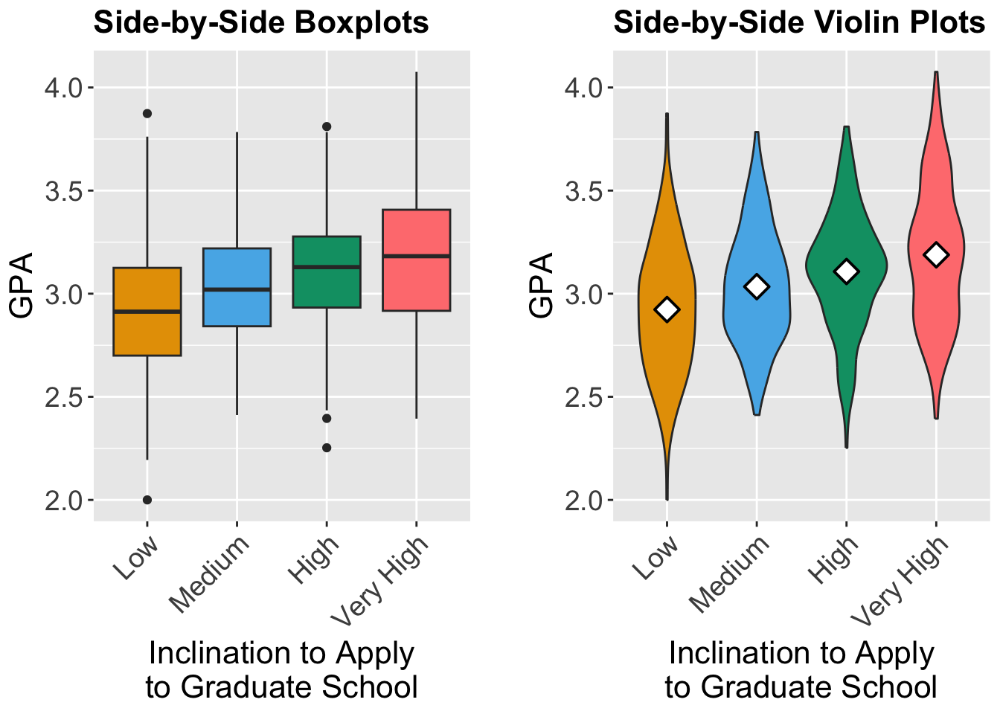
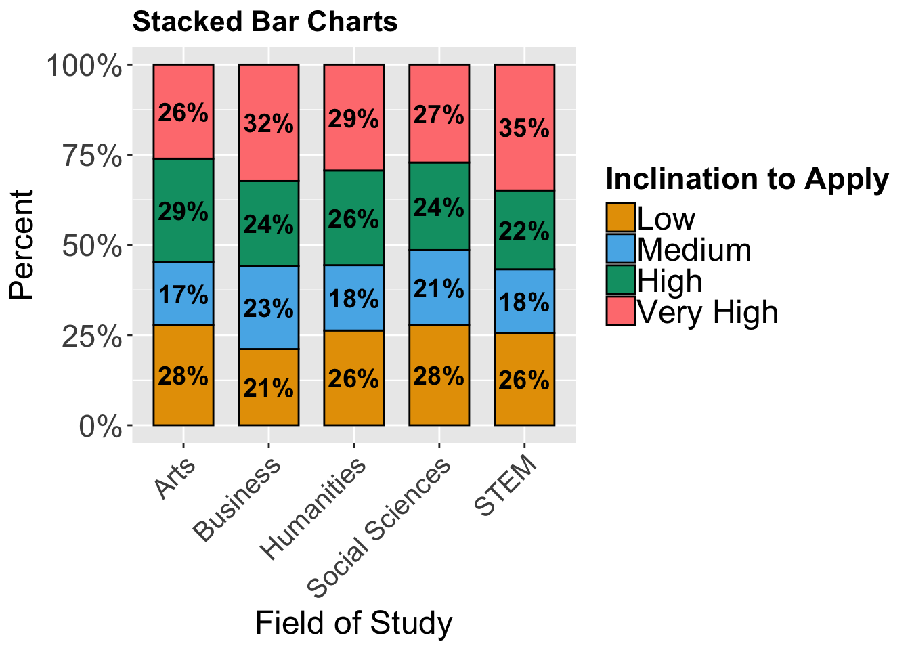
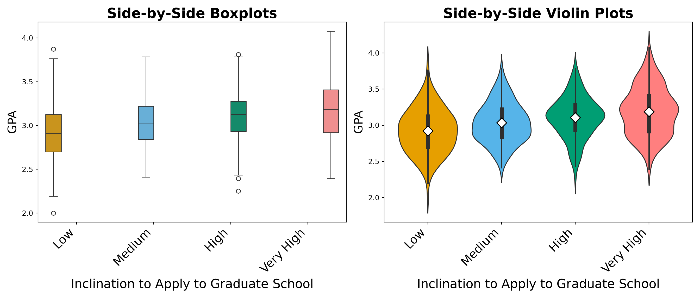
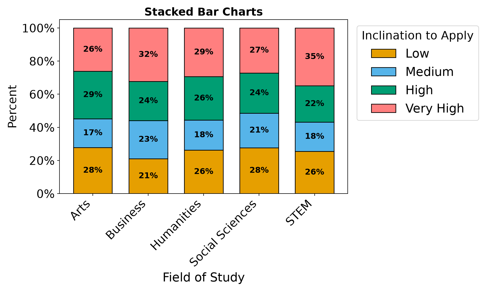
Box and violin plots, along with stacked bar charts, show descriptively how academic performance and field of study relate to a student’s likelihood of applying to graduate school.
- Students with
Very Highinclination to apply tend to have the highest GPAs on average, with a median GPA visibly higher than those in theLoworMediumcategories. - The mean GPA, represented by the white diamonds in the violin plots, shows a consistent upward trend as the level of intent increases, suggesting a positive association between academic performance and Inclination to apply to graduate school.
- While there is considerable overlap in the GPA distributions of the
LowandMediumgroups, theVery Highgroup shows a distinct shift toward the higher end of the GPA scale. - Differences in the distribution of
inclination_to_applyacross fields of study suggest that a student’s field of study may influence their propensity to pursue graduate education.
Next, we examine how GRE_score relates to inclination_to_apply using the same side-by-side boxplot and violin plot approach.
train_df_gre_boxplots <- train_df |>
ggplot(aes(inclination_to_apply, GRE_score)) +
geom_boxplot(aes(fill = inclination_to_apply)) +
labs(y = "GRE Score", x = "Inclination to Apply\nto Graduate School") +
ggtitle("Side-by-Side Boxplots") +
theme(
plot.title = element_text(size = 16, face = "bold"),
axis.text = element_text(size = 17),
axis.text.x = element_text(angle = 45, hjust = 1),
axis.title = element_text(size = 18),
legend.position = "none"
) +
scale_fill_manual(values = c("#E69F00", "#56B4E9", "#009E73", "#FF7F7F"))
train_df_gre_violin <- train_df |>
ggplot(aes(inclination_to_apply, GRE_score)) +
geom_violin(aes(fill = inclination_to_apply)) +
labs(y = "GRE Score", x = "Inclination to Apply\nto Graduate School") +
ggtitle("Side-by-Side Violin Plots") +
stat_summary(
fun = mean, geom = "point",
shape = 23, fill = "white", colour = "black", size = 4, stroke = 1
) +
theme(
plot.title = element_text(size = 16, face = "bold"),
axis.text = element_text(size = 17),
axis.text.x = element_text(angle = 45, hjust = 1),
axis.title = element_text(size = 18),
legend.position = "none"
) +
scale_fill_manual(values = c("#E69F00", "#56B4E9", "#009E73", "#FF7F7F"))
plot_grid(train_df_gre_boxplots, train_df_gre_violin, nrow = 1)fig, axes = plt.subplots(1, 2, figsize=(14, 6))
# --- Boxplot ---
sns.boxplot(data=train_df, x='inclination_to_apply', y='GRE_score', hue='inclination_to_apply',
palette={'Low': '#E69F00', 'Medium': '#56B4E9', 'High': '#009E73', 'Very High': '#FF7F7F'}, ax=axes[0], legend=False)
axes[0].set_title('Side-by-Side Boxplots', fontsize=20, fontweight='bold')
axes[0].set_xlabel('Inclination to Apply to Graduate School', fontsize=18)
axes[0].set_ylabel('GRE Score', fontsize=17)
axes[0].tick_params(axis='x', labelrotation=45, labelsize=17)
axes[0].tick_params(axis='y', labelsize=14)
for lbl in axes[0].get_xticklabels():
lbl.set_ha('right')
# --- Violin Plot with mean point ---
sns.violinplot(data=train_df, x='inclination_to_apply', y='GRE_score', hue='inclination_to_apply',
palette={'Low': '#E69F00', 'Medium': '#56B4E9', 'High': '#009E73', 'Very High': '#FF7F7F'}, ax=axes[1], legend=False, dodge=False)
ordered_cats = list(train_df['inclination_to_apply'].cat.categories) \
if hasattr(train_df['inclination_to_apply'], 'cat') \
else sorted(train_df['inclination_to_apply'].unique())
# Recolour each violin body by its x-position (Low, Medium, High, Very High
# from left to right) so the fill is correct regardless of how the installed
# seaborn version maps a dict palette onto the hue categories.
from matplotlib.collections import PolyCollection
violin_colors = ['#E69F00', '#56B4E9', '#009E73', '#FF7F7F']
for body in axes[1].collections:
if isinstance(body, PolyCollection) and len(body.get_paths()):
pos = int(round(body.get_paths()[0].vertices[:, 0].mean()))
if 0 <= pos < len(violin_colors):
body.set_facecolor(violin_colors[pos])
means = train_df.groupby('inclination_to_apply', observed=True)['GRE_score'].mean()
xticks = axes[1].get_xticks()
for i, cat in enumerate(ordered_cats):
axes[1].plot(xticks[i], means[cat], marker='D', markerfacecolor='white', markeredgecolor='black', markeredgewidth=1.2,
markersize=10, zorder=5, linestyle='None')
axes[1].set_title('Side-by-Side Violin Plots', fontsize=20, fontweight='bold')
axes[1].set_xlabel('Inclination to Apply to Graduate School', fontsize=18)
axes[1].set_ylabel('GRE Score', fontsize=17)
axes[1].tick_params(axis='x', labelrotation=45, labelsize=17)
axes[1].tick_params(axis='y', labelsize=14)
for lbl in axes[1].get_xticklabels():
lbl.set_ha('right')
plt.tight_layout()
plt.show()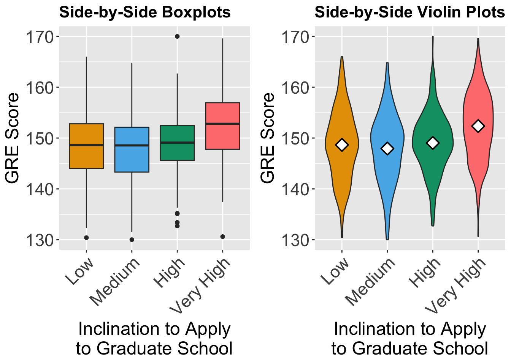
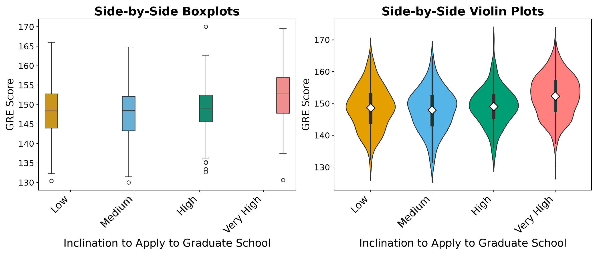
The GRE score plots mirror the structure of the GPA plots, allowing us to assess whether GRE performance follows a similar pattern across likelihood-to-apply categories.
- The
Very Highgroup stands clearly apart from the other three, with a mean GRE score of approximately \(152.4\), roughly 3 to 4 points higher than theLow(\(148.7\)),Medium(\(147.9\)), andHigh(\(149.0\)) groups. This separation is visible in both the boxplot and the violin plot. - Unlike GPA, GRE score does not increase monotonically across the ordered categories. The
Mediumgroup has the lowest mean GRE score of all four groups, and theLow,Medium, andHighgroups show substantially overlapping distributions. This suggests that GRE score may primarily distinguish students in theVery Highcategory rather than tracking the full ordinal gradient. - The
Lowgroup exhibits the widest spread in GRE scores (standard deviation ≈ \(6.7\)), while theHighgroup is the most tightly clustered (standard deviation ≈ \(5.9\)), indicating greater homogeneity in standardized test performance among students who are likely (but not extremely likely) to apply.
15.5 Data Modelling
We have been discussing the advantages of using an alternative model instead of multinomial regression in the presence of an ordinal response variable. In this section, we go over the details of data modelling for an ordinal response variable with a set of discrete or continuous regressors using an ordinal logistic regression model. This type of modelling is the most frequent and popular model for ordinal responses.
To present the details of the modelling framework, we begin with the concept of cumulative logits. We have already encountered the logit function in the context of binary logistic regression (see Chapter 8). Recall that in logistic regression, the logit function is applied to the odds of an event. Specifically, if
\[ p_i = P(Y_i = 1 |x_{i,1}, x_{i,2}, ..., x_{i,k}) \]
then the odds of the event \(Y=1\) given the regressors is:
\[ \frac{P(Y_i = 1 \mid x_{i,1}, ..., x_{i,k})}{P(Y_i = 0 \mid x_{i,1}, ..., x_{i,k})} = \frac{p_i}{1-p_i} \]
and the logit is defined as the logarithm of these odds, i.e. \(\log\left(\frac{p_i}{1-p_i}\right)\). In logistic regression modelling, we assume that this log-odds is a linear function of the regressors:
\[ \log\left(\frac{p_i}{1-p_i}\right) = \beta_0 + \beta_1 x_{i,1} + \beta_2x_{i,2} + \ldots + \beta_k x_{i,k} \tag{15.1}\]
This idea and formulation is the basis for extending the logistic regression framework for an outcome with two categories to ordinal outcomes with more than two ordered categories. In the ordinal case, instead of modelling the log-odds of a single binary event, we model the cumulative logits, which compare the probability of being at or below a given category to the probability of being above that category.
Notation: To avoid lengthy formulas, we introduce compact notation that will be used consistently throughout this chapter. In expressions such as \(P(Y_i = 1 \mid x_{i,1}, ..., x_{i,k})\), the conditioning is on all regressors. Instead of repeatedly writing all regressors, we define:
\[ \mathbf{x}_i = (x_{i,1},...,x_{i,k}), \]
where \(\mathbf{x}_i\) is a vector of size \(k\) that bundles all \(k\) regressors into a single object, so we can refer to them all at once instead of listing each one, and write
\[ P(Y_i = 1 \mid \mathbf{x}_i). \]
This notation simplifies expressions and improves readability. Now let’s imagine that your ordered response variable has \(J\) different categories, such that \(J \ge 3\). We begin with the category ordering by formally defining the logits of cumulative probabilities as follows. Let
\[ P(Y_i \leq j \mid \mathbf{x}_i) = p_{i,1} + p_{i,2} + \ldots + p_{i,j} \quad \quad j = 1, 2, \ldots, J-1 \]
be the cumulative probability.
For example, let’s consider \(J = 3\) ordered categories, such that \(j\) runs over values of \(j=1\) and \(j=2\); therefore, there are two cumulative probabilities to consider:
\[ \begin{aligned} P(Y_i \leq 1 \mid \mathbf{x}_i) &= p_{i,1}, \\ P(Y_i \leq 2 \mid \mathbf{x}_i) &= p_{i,1} + p_{i,2}. \end{aligned} \]
Each one accumulates the category probabilities from the lowest category up to category \(j\). We stop at \(j = 2\) because the final cumulative probability is always \(P(Y_i \leq 3 \mid \mathbf{x}_i) = p_{i,1} + p_{i,2} + p_{i,3} = 1\), which carries no information and is therefore not modelled. The same idea applies for an arbitrary number of categories \(J\): we form \(J - 1\) running totals of the form \(P(Y_i \leq j \mid \mathbf{x}_i) = p_{i,1} + \ldots + p_{i,j}\) for \(j = 1, 2, \ldots, J - 1\), with each adding one more category probability than the previous.
The logits of cumulative probabilities are defined as:
\[ \begin{aligned} &\text{logit}(P(Y_i \leq j \mid \mathbf{x}_i)) = \log\left( \frac{P(Y_i \leq j \mid \mathbf{x}_i)}{ 1 - P(Y_i \leq j \mid \mathbf{x}_i)} \right) \\ &= \log\left( \frac{P(Y_i = 1 \mid \mathbf{x}_i) + P(Y_i = 2 \mid \mathbf{x}_i) + \ldots + P(Y_i = j \mid \mathbf{x}_i)}{ P(Y_i = j+1 \mid \mathbf{x}_i) + P(Y_i = j+2 \mid \mathbf{x}_i) + \ldots + P(Y_i = J \mid \mathbf{x}_i) } \right) \end{aligned} \tag{15.2}\]
The logit transformation defined above is the model’s link function. A link function maps a probability - here the cumulative probability \(P(Y_i \leq j \mid \mathbf{x}_i)\), which is confined to the interval \([0, 1]\), onto the entire set of real numbers, so that it can be expressed as a linear function of the regressors. As it is applied to cumulative probabilities, it is known as the cumulative logit link, which is the ordinal counterpart of the ordinary logit link used in binary logistic regression. Other links are possible, such as the probit or complementary log–log links, but the cumulative logit is the most widely used, and it is the one we will use in this chapter.
With the cumulative logits now defined, we reach an important modelling decision. In ordinal logistic regression, cumulative logits can be approached in two main ways, distinguished by the assumptions each makes about how the regressors relate to the response categories. These two primary modelling approaches are the proportional odds assumption and the non-proportional odds assumption.
The proportional odds model assumes that each regressor has the same effect across all cumulative logits. In other words, the regression coefficient for a given regressor is shared across the cumulative comparisons and does not depend on the response category cutoff (i.e. the value of j). This assumption leads to a model with a simpler interpretation: each coefficient describes how the regressor shifts the odds of being in a higher response category, regardless of where the ordinal response is split. In contrast, the non-proportional odds model relaxes this assumption by allowing regression coefficients to vary across cumulative splits of the response. In the following sections, we introduce these two approaches in detail and discuss their interpretation and practical implications. Later in the chapter, we also show how to formally assess the proportional odds assumption using the Brant–Wald test.
15.5.1 The Proportional Odds modelling
For an ordinal response variable with \(J\) ordered categories, we defined the cumulative logits as
\[ \text{logit}(P(Y_i \le j \mid \mathbf{x}_i)) = \text{log}\left(\frac{ P(Y_i \le j \mid \mathbf{x}_i) }{ P(Y_i \ge j+1 \mid \mathbf{x}_i) }\right) \tag{15.3}\]
for all values of \(j = 1, 2, \ldots, J-1\). This means that for an outcome with \(J\) categories, we have \(J-1\) cumulative logits. A natural question now arises: how should these cumulative logits depend on the regressors? The proportional odds model assumes that each cumulative logit is a linear function of the regressors, with the important restriction that the regression coefficients are the same across all cumulative logits. The model is written as:
\[ \text{logit}( P(Y_i \le j \mid \mathbf{x}_i) ) = \alpha_j + \beta_1 x_{i,1} + \beta_2 x_{i,2} + ... + \beta_k x_{i,k} \tag{15.4}\]
for all values of \(j\in\{1, 2, \ldots, J-1\}\). In this formula,
- \(\alpha_j\) is a category-specific intercept and depends on the category \(j\),
- \(\beta_1, ..., \beta_k\) are regression coefficients that do not depend on \(j\).
The essential assumption is that the effect of each explanatory variable on the log-odds is constant across all cumulative splits of the response variable. The slope parameters remain the same for comparing each of the following pairs of probabilities.
\(P(Y_i \le 1 \mid \mathbf{x}_i)\) versus \(P(Y_i > 1 \mid \mathbf{x}_i)\)
-
\(P(Y_i \le 2 \mid \mathbf{x}_i)\) versus \(P(Y_i > 2 \mid \mathbf{x}_i)\)
\(\vdots\)
\(P(Y_i \le J-1 \mid \mathbf{x}_i)\) versus \(P(Y_i > J-1 \mid \mathbf{x}_i)\)
This property of regression coefficients across cumulative logits is known as the proportional odds assumption.
15.5.2 The Non-proportional Odds modelling
While the proportional odds model assumes that the effect of each regressor is the same across all cumulative logits, this assumption may not always hold in practice. If the effect of one or more regressors varies across the cumulative splits of the ordinal response, then we use a non-proportional odds model.
Formally speaking, the non-proportional odds model allows the regression coefficients to depend on the cumulative category \(j\), as shown below:
\[ \text{logit}( P(Y_i \le j \mid \mathbf{x}_i) ) = \alpha_j + \beta_{1,j} x_{i,1} + \beta_{2,j} x_{i,2} + \ldots + \beta_{k,j} x_{i,k} \tag{15.5}\]
In this model:
- \(\alpha_j\) is the category-specific intercept (the same as before),
- \(\beta_{1,j}, \beta_{2,j}, \ldots , \beta_{k,j}\) are category-specific regression coefficients, meaning that the effect of each regressor can differ across cumulative logits.
At the first glance, this seems to be a great flexibility for modelling but it comes at a cost: the number of parameters increases with the number of cumulative splits, making the model more complex and potentially harder to interpret. However, it provides a more accurate representation when the proportional odds assumption is not valid. We will discuss how to assess these assumptions later in this chapter.
To help us understand the differences in assumption visually, we have the following plot. The figure below visualizes four cumulative probabilities \(P(Y <= 1 \mid x)\), \(P(Y <= 2 \mid x)\), \(P(Y <= 3 \mid x)\), and \(P(Y <= 4 \mid x)\) on the y-axis plotted as a logistic curve against a single regressor \(x\). Notice that all curves have the same slope but different intercepts. This parallel structure shows the proportional odds assumption: the effect of \(x\) on the log-odds scale (which is the coefficient of \(x\)) is the same across all cumulative logits. In other words, increasing \(x\) shifts each cumulative logit by the same amount regardless of which categorical group \(j\) we consider. Note that the intercepts in this model are \(\alpha_1 = 4\), \(\alpha_2 = 5.5\), \(\alpha_3 = 6.3\), and \(\alpha_4 = 10\). The coefficient which measures the effect of \(x\) on log-odds is \(\beta=12\) and it is the same for all cumulative probabilities. Thus, the visual parallelism in this plot provides an intuitive way to understand what proportional odds means geometrically.
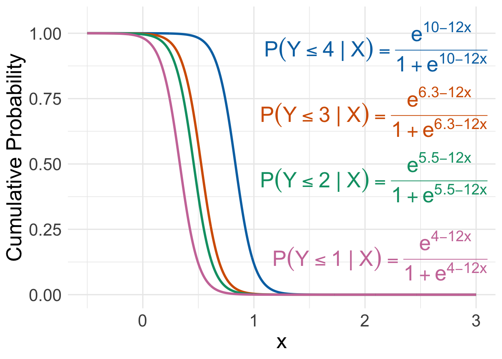
If the proportional odds assumption were violated, these curves would no longer be parallel on the logit scale; instead, their slopes would differ, indicating that the effect of \(x\) changes depending on which cumulative split of the ordinal outcome is being modelled. The following figure is an example of proportional odds assumption being violated:
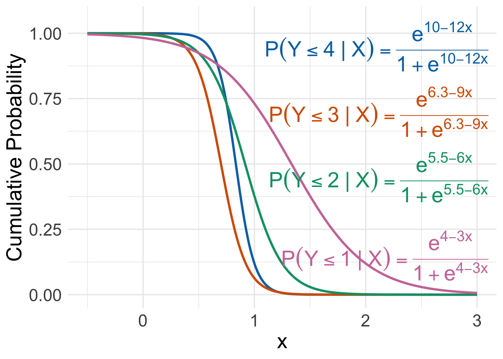
15.5.3 The Log-Likelihood Function
The ordinal logistic regression model describes the cumulative probabilities \(P(Y_i \le j \mid \mathbf{x}_i)\), that is, the chance of falling in category \(j\) or any lower category. To estimate the model, however, we need the category-specific probability \(p_{i,j} = P(Y_i = j \mid \mathbf{x}_i)\), the chance of landing in exactly one category. We recover it by a simple differencing step: the probability of being in category \(j\) alone is the probability of being at or below \(j\), minus the probability of being at or below the category just beneath it,
\[ p_{i,j} = P(Y_i = j \mid \mathbf{x}_i) = P(Y_i \le j \mid \mathbf{x}_i) - P(Y_i \le j-1 \mid \mathbf{x}_i), \qquad j = 1, \ldots, J. \]
The two endpoints are fixed by convention: nothing can fall below the first category, so \(P(Y_i \le 0 \mid \mathbf{x}_i) = 0\), and everything falls at or below the last, so \(P(Y_i \le J \mid \mathbf{x}_i) = 1\).
To write this in terms of the model parameters, we return to the proportional odds model itself. Recall that the model specifies each cumulative probability through its logit,
\[ \text{logit}\bigl(P(Y_i \le j \mid \mathbf{x}_i)\bigr) = \log\left( \frac{P(Y_i \le j \mid \mathbf{x}_i)}{1 - P(Y_i \le j \mid \mathbf{x}_i)} \right) = \alpha_j - (\beta_1 x_{i,1} + \beta_2 x_{i,2} + \ldots + \beta_k x_{i,k}). \]
The right-hand side is a linear function of the regressors. We call it the systematic component and write it compactly using the vector notation \(\boldsymbol{\beta}^\top \mathbf{x}_i = \beta_1 x_{i,1} + \beta_2 x_{i,2} + \ldots + \beta_k x_{i,k}\):
\[ \eta_{i,j} = \alpha_j - \boldsymbol{\beta}^\top \mathbf{x}_i . \]
Therefore the model states that \(\text{logit}(P(Y_i \le j \mid \mathbf{x}_i)) = \eta_{i,j}\). To obtain the cumulative probabilities, we undo the logit by solving this equation for \(P(Y_i \le j \mid \mathbf{x}_i)\). Writing \(P = P(Y_i \le j \mid \mathbf{x}_i)\) for brevity, we start from \(\log\!\bigl(\tfrac{P}{1 - P}\bigr) = \eta_{i,j}\), exponentiate both sides, and rearrange the equation:
\[ \frac{P}{1 - P} = e^{\eta_{i,j}} \;\;\Longrightarrow\;\; P = e^{\eta_{i,j}}\,(1 - P) \;\;\Longrightarrow\;\; P\bigl(1 + e^{\eta_{i,j}}\bigr) = e^{\eta_{i,j}} \;\;\Longrightarrow\;\; P = \frac{e^{\eta_{i,j}}}{1 + e^{\eta_{i,j}}}. \]
The final expression is the logistic cumulative function \(F\) evaluated at the systematic component:
\[ F(\eta) = \frac{e^{\eta}}{1 + e^{\eta}}, \qquad \text{so that} \qquad P(Y_i \le j \mid \mathbf{x}_i) = F(\eta_{i,j}) = \frac{e^{\alpha_j - \boldsymbol{\beta}^\top \mathbf{x}_i}}{1 + e^{\alpha_j - \boldsymbol{\beta}^\top \mathbf{x}_i}} . \]
Substituting into the differencing formula gives the category probability in closed form,
\[ p_{i,j} = F(\eta_{i,j}) - F(\eta_{i,j-1}) = \frac{e^{\alpha_j - \boldsymbol{\beta}^\top \mathbf{x}_i}}{1 + e^{\alpha_j - \boldsymbol{\beta}^\top \mathbf{x}_i}} - \frac{e^{\alpha_{j-1} - \boldsymbol{\beta}^\top \mathbf{x}_i}}{1 + e^{\alpha_{j-1} - \boldsymbol{\beta}^\top \mathbf{x}_i}}. \]
Each \(p_{i,j}\) is guaranteed to be a non-negative probability. As the thresholds are strictly increasing, such that \(\alpha_{j-1} < \alpha_j\), the cumulative function \(F\) is also increasing, so \(F(\eta_{i,j}) \ge F(\eta_{i,j-1})\) and therefore \(p_{i,j}\geq0\).
To estimate the model, we need a way to measure how well a given set of parameters explains the observed data. The likelihood function does exactly this: it expresses the probability of the data we actually observed as a function of the unknown parameters, and estimation amounts to finding the parameter values that make this probability as large as possible.
We first encode each individual’s observed response category using indicator variables. Let \(y_{i,j} = 1\) if the \(i\)-th individual belongs to category \(j\), and let \(y_{i,j} = 0\) otherwise. Since each individual belongs to exactly one of the \(J\) possible categories, the vector \(\mathbf{y}=(y_{i,1}, y_{i,2}, \ldots, y_{i,J})\) contains exactly one entry equal to \(1\), with all remaining entries equal to \(0\). This representation is often called a one-hot encoding of the response category. The likelihood function for the ordinal logistic regression model is the following:
\[ \mathcal{L}(\boldsymbol{\alpha}, \boldsymbol{\beta};\mathbf{y}) = \prod_{i=1}^n \prod_{j=1}^J p_{i,j}^{y_{i,j}}, \tag{15.6}\]
where \(n\) is the number of individuals in the sample, \(J\) is the number of ordered categories, and \(p_{i,j} = P(Y_i = j \mid \mathbf{x}_i)\) is the model-implied probability that individual \(i\) (with regressor values \(\mathbf{x}_i\)) falls in category \(j\), as derived earlier by differencing the cumulative probabilities. The two unknown parameter sets being estimated are collected in \(\boldsymbol{\alpha} = (\alpha_1, \alpha_2, \ldots, \alpha_{J-1})^\top\), the vector of thresholds (the category-specific intercepts), and \(\boldsymbol{\beta} = (\beta_1, \beta_2, \ldots, \beta_k)^\top\), the vector of \(k\) shared slopes that apply across all cumulative splits.
The two products have intuitive roles. The inner product over \(j\) runs across the \(J\) categories for a single individual: because of the indicator \(y_{i,j}\) in the exponent, every term equals \(0\) except the one matching the individual’s true category, so the inner product collapses to just \(p_{i,j}\) for that observed category. The outer product over \(i\) then multiplies these per-individual probabilities together across all \(n\) people, which is valid because the observations are assumed independent. Overall, this is a multinomial likelihood evaluated at the ordinal-model category probabilities, rather than at freely estimated per-category probabilities.
Taking the logarithm turns the products into sums, which is far easier to differentiate and optimize, and yields the log-likelihood function:
\[ \ell(\boldsymbol{\alpha}, \boldsymbol{\beta};\mathbf{y}) = \sum_{i=1}^n \sum_{j=1}^J y_{i,j} \log p_{i,j}. \tag{15.7}\]
Maximizing \(\ell\) gives the estimates \(\hat{\boldsymbol{\alpha}}\) and \(\hat{\boldsymbol{\beta}}\), the parameter values under which the observed data are most probable. Unlike ordinary least squares, however, there is no closed-form algebraic expression for the values of \(\hat{\boldsymbol{\alpha}}\) and \(\hat{\boldsymbol{\beta}}\) that maximize \(\ell\): the category probabilities \(p_{i,j}\) enter the log-likelihood non-linearly through the logistic function, so setting the derivatives to zero does not yield equations we can solve directly. Instead, we rely on iterative numerical optimization, which starts from an initial guess and refines the estimates step by step until the log-likelihood can no longer be improved. The standard choice here is the Newton–Raphson method, which we describe as additional detail in the tip box below. A closely related variant — the one most statistical software uses to fit these models — replaces the observed Hessian with its expected value (the Fisher information), giving the Fisher scoring algorithm, which is equivalent to iteratively reweighted least squares (IRLS) (McCullagh 1980; Nelder and Wedderburn 1972).
Tip on the Newton–Raphson Method
The parameters we ultimately estimate are the thresholds \(\boldsymbol{\alpha} = (\alpha_1, \ldots, \alpha_{J-1})^\top\) and the shared slopes \(\boldsymbol{\beta} = (\beta_1, \ldots, \beta_k)^\top\). Since the log-likelihood has no closed-form maximizer, the Newton–Raphson procedure estimates \(\boldsymbol{\alpha}\) and \(\boldsymbol{\beta}\) jointly by iterating with the score function and Hessian matrix of the log-likelihood (Agresti 2010).
Score function: The partial derivative of the log-likelihood with respect to each threshold \(\alpha_j\) is:
\[ \frac{\partial \ell}{\partial \alpha_j} = \sum_{i=1}^n \left[ \frac{y_{i,j}}{p_{i,j}} - \frac{y_{i,j+1}}{p_{i,j+1}} \right] f(\alpha_j - \boldsymbol{\beta}^\top \mathbf{x}_i), \]
where \(f(\cdot) = F(\cdot)(1 - F(\cdot))\) is the logistic density. The partial derivative with respect to each shared slope \(\beta_k\) is:
\[ \frac{\partial \ell}{\partial \beta_k} = -\sum_{i=1}^n x_{i,k} \sum_{j=1}^{J} y_{i,j} \left[ \frac{f(\alpha_j - \boldsymbol{\beta}^\top \mathbf{x}_i)}{p_{i,j}} - \frac{f(\alpha_{j-1} - \boldsymbol{\beta}^\top \mathbf{x}_i)}{p_{i,j}} \right]. \]
The key difference from the multinomial case is that the slopes \(\beta_k\) appear in all \(J-1\) cumulative logits simultaneously, so their score components aggregate information across every cumulative split.
Hessian matrix: The Hessian \(H(\boldsymbol{\alpha}, \boldsymbol{\beta})\) consists of second-order partial derivatives of \(\ell\) with respect to the thresholds and slopes. Because the shared slopes couple all cumulative logits together, the Hessian is a dense \((J-1+k) \times (J-1+k)\) matrix, unlike the block-diagonal structure seen in multinomial logistic regression. In software this is handled automatically. For a thorough treatment of the Hessian in the context of maximum likelihood estimation for ordinal models, refer to Chapter 3 of Agresti (2010).
Iteration: Collecting the thresholds and slopes into the stacked parameter pair \((\boldsymbol{\alpha}, \boldsymbol{\beta})\), the Newton–Raphson update at step \(t\) is:
\[ \begin{pmatrix} \boldsymbol{\alpha}^{(t+1)} \\ \boldsymbol{\beta}^{(t+1)} \end{pmatrix} \leftarrow \begin{pmatrix} \boldsymbol{\alpha}^{(t)} \\ \boldsymbol{\beta}^{(t)} \end{pmatrix} - \left[ H\!\left(\boldsymbol{\alpha}^{(t)}, \boldsymbol{\beta}^{(t)}\right) \right]^{-1} S\!\left(\boldsymbol{\alpha}^{(t)}, \boldsymbol{\beta}^{(t)}\right), \]
where \(S(\boldsymbol{\alpha}, \boldsymbol{\beta})\) is the stacked score vector holding the threshold derivatives followed by the slope derivatives. The algorithm is initialized at \(\boldsymbol{\alpha}^{(0)} = \mathbf{0}\) and \(\boldsymbol{\beta}^{(0)} = \mathbf{0}\) (or a data-driven starting point) and repeats until changes in \(\ell\), \(\boldsymbol{\alpha}\), and \(\boldsymbol{\beta}\) fall below a convergence tolerance.
The full Newton–Raphson/IRLS procedure is:
- Initialize \(\boldsymbol{\alpha}^{(0)} = \mathbf{0}\) and \(\boldsymbol{\beta}^{(0)} = \mathbf{0}\) (the thresholds and slopes).
- Repeat until convergence:
- Compute the systematic components \(\alpha_j - \boldsymbol{\beta}^\top \mathbf{x}_i\) for all \(i\) and \(j\).
- Compute cumulative probabilities \(P(Y_i \le j \mid \mathbf{x}_i)\) and category probabilities \(p_{i,j}\).
- Compute the log-likelihood \(\ell(\boldsymbol{\alpha}^{(t)}, \boldsymbol{\beta}^{(t)})\), score \(S(\boldsymbol{\alpha}^{(t)}, \boldsymbol{\beta}^{(t)})\), and Hessian \(H(\boldsymbol{\alpha}^{(t)}, \boldsymbol{\beta}^{(t)})\).
- Update \((\boldsymbol{\alpha}^{(t+1)}, \boldsymbol{\beta}^{(t+1)})\) using the Newton–Raphson step above.
- Check convergence.
15.6 Estimation
15.6.1 Fitting the Proportional Odds Model
We now turn to the question of how the parameters of the ordinal logistic regression model are estimated from data. We summarize the key estimation steps in mathematical terms below, working with one observation at a time before generalizing to the full sample.
Recall that the proportional odds model for an ordinal response \(Y\) with \(J\) ordered categories and \(k\) regressors is
\[ \text{logit}(P(Y_i \le j \mid \mathbf{x}_i)) = \alpha_j - (\beta_1 x_{i,1} + \beta_2 x_{i,2} + \ldots + \beta_k x_{i,k}), \quad j = 1, \ldots, J-1, \tag{15.8}\]
where \(\alpha_1 < \alpha_2 < \cdots < \alpha_{J-1}\) are the category-specific intercepts, which are also known as thresholds or cutpoints, and \(\beta_1,\beta_2, \ldots, \beta_k\) are the shared slope coefficients. Note the sign convention - the regressor terms are subtracted from the intercept, such that that a positive \(\beta_k\) corresponds to higher values of \(x_{i,k}\) shifting probability mass toward higher categories. This sign convention is standard in R’s MASS::polr and in most textbooks.
The model therefore comprises \((J - 1) + k\) parameters: \(J - 1\) threshold parameters \((\alpha_1, \alpha_2, \ldots, \alpha_{J-1})\) and \(k\) regression coefficients \((\beta_1, \beta_2, \ldots, \beta_k)\) shared across all cumulative splits.
We now fit the proportional odds model to the college dataset using inclination_to_apply as the ordinal response with four levels (Low < Medium < High < Very High) and GPA, GRE_score, and field_of_study as regressors. In R, we use polr() from the MASS package; in Python, we use OrderedModel from statsmodels.
library(MASS)
library(broom)
# Ensure inclination_to_apply is an ordered factor with correct level order
train_df$inclination_to_apply <- factor(
train_df$inclination_to_apply,
levels = c("Low", "Medium", "High", "Very High"),
ordered = TRUE
)
# Ensure field_of_study is a factor with a fixed reference level (Arts)
train_df$field_of_study <- factor(
train_df$field_of_study,
levels = c("Arts", "Business", "Social Sciences", "STEM", "Humanities")
)
# Fit the proportional odds model
ordinal_fit <- polr(
inclination_to_apply ~ GPA + GRE_score + field_of_study,
data = train_df,
Hess = TRUE # return the Hessian for inference
)
tidy(ordinal_fit)from statsmodels.miscmodels.ordinal_model import OrderedModel
# Ensure inclination_to_apply is an ordered categorical
ordered_categories = ["Low", "Medium", "High", "Very High"]
train_df["inclination_to_apply"] = pd.Categorical(
train_df["inclination_to_apply"],
categories=ordered_categories,
ordered=True
)
# Ensure field_of_study is a categorical with a fixed reference level (Arts)
field_categories = ["Arts", "Business", "Social Sciences", "STEM", "Humanities"]
train_df["field_of_study"] = pd.Categorical(
train_df["field_of_study"],
categories=field_categories
)
# Fit the proportional odds model (logit link)
X = pd.get_dummies(train_df[["GPA", "GRE_score", "field_of_study"]], columns=["field_of_study"], drop_first=True, dtype=float)
ordinal_fit = OrderedModel(
train_df["inclination_to_apply"],
X,
distr="logit"
)
ordinal_result = ordinal_fit.fit(method="bfgs", disp=False)
n_thr = ordinal_result.model.k_levels - 1 # number of cutpoints (J - 1)
n_slope = len(ordinal_result.params) - n_thr # number of slope coefficients
params = ordinal_result.params.values
cov = ordinal_result.cov_params().values
# Slope coefficients: identical to R, reported as-is.
slope_tbl = pd.DataFrame({
"term": ordinal_result.params.index[:n_slope],
"estimate": params[:n_slope],
"std.error": ordinal_result.bse.values[:n_slope],
"statistic": ordinal_result.tvalues.values[:n_slope],
"coef.type": "coefficient",
})
# Thresholds: back-transform log-increments to cutpoints.
thr_raw = params[n_slope:]
thr_cov = cov[n_slope:, n_slope:]
cutpoints = np.concatenate(([thr_raw[0]], np.exp(thr_raw[1:]))).cumsum()
# Delta-method Jacobian d(cutpoint) / d(raw threshold parameter).
jac = np.zeros((n_thr, n_thr))
for m in range(n_thr):
jac[m, 0] = 1.0
jac[m, 1:m + 1] = np.exp(thr_raw[1:m + 1])
cut_se = np.sqrt(np.diag(jac @ thr_cov @ jac.T))
thr_tbl = pd.DataFrame({
"term": [f"{ordered_categories[i]}|{ordered_categories[i + 1]}" for i in range(n_thr)],
"estimate": cutpoints,
"std.error": cut_se,
"statistic": cutpoints / cut_se,
"coef.type": "scale",
})
tidy_ordinal = pd.concat([slope_tbl, thr_tbl], ignore_index=True)
print(
"Note: statsmodels reports thresholds beyond the first as log-increments\n"
"between consecutive cutpoints. The thresholds below have been transformed\n"
"to the cutpoint scale (with delta-method standard errors), so that\n"
"they match the cutpoints reported by polr() in R.\n"
)
precision = {
"estimate": {"coefficient": 4, "scale": 1},
"std.error": {"coefficient": 4, "scale": 2},
"statistic": {"coefficient": 2, "scale": 1},
}
display_tbl = tidy_ordinal.copy()
for col, dp in precision.items():
display_tbl[col] = [
f"{val:.{dp[kind]}f}"
for val, kind in zip(tidy_ordinal[col], tidy_ordinal["coef.type"])
]
print(display_tbl.to_string(index=False))# A tibble: 9 × 5
term estimate std.error statistic coef.type
<chr> <dbl> <dbl> <dbl> <chr>
1 GPA 2.20 0.223 9.89 coefficient
2 GRE_score 0.0780 0.0104 7.49 coefficient
3 field_of_studyBusiness 0.461 0.226 2.04 coefficient
4 field_of_studySocial Sciences 0.0314 0.220 0.142 coefficient
5 field_of_studySTEM 0.408 0.220 1.86 coefficient
6 field_of_studyHumanities 0.209 0.225 0.928 coefficient
7 Low|Medium 17.5 1.80 9.68 scale
8 Medium|High 18.4 1.81 10.2 scale
9 High|Very High 19.6 1.83 10.7 scale Note: statsmodels reports thresholds beyond the first as log-increments
between consecutive cutpoints. The thresholds below have been transformed
to the cutpoint scale (with delta-method standard errors), so that
they match the cutpoints reported by polr() in R. term estimate std.error statistic coef.type
GPA 2.2049 0.2229 9.89 coefficient
GRE_score 0.0780 0.0104 7.50 coefficient
field_of_study_Business 0.4610 0.2256 2.04 coefficient
field_of_study_Social Sciences 0.0314 0.2205 0.14 coefficient
field_of_study_STEM 0.4085 0.2195 1.86 coefficient
field_of_study_Humanities 0.2089 0.2251 0.93 coefficient
Low|Medium 17.5 1.80 9.7 scale
Medium|High 18.4 1.81 10.2 scale
High|Very High 19.6 1.83 10.7 scaleThe output reports the estimated parameters: the shared slope coefficients \(\hat{\beta}_1, \ldots, \hat{\beta}_k\) (one per regressor), each with its standard error and \(t\)-value, together with the estimated thresholds \(\hat{\alpha}_1 < \hat{\alpha}_2 < \hat{\alpha}_3\), which correspond to the three cumulative splits Low|Medium, Medium|High, and High|Very High. The fact that the thresholds are strictly increasing confirms that the monotonicity constraint on cumulative probabilities is satisfied by the fitted model.
In the case study model with regressors \(x_{i,\texttt{GPA}}\), \(x_{i,\texttt{GRE}}\), and the field_of_study dummy variables \(\mathbf{Z}_{i,\texttt{field}}\), the fitted proportional odds model can be written as:
\[ \text{logit}\!\left(P(Y_i \le j \mid \mathbf{x}_i)\right) = \hat{\alpha}_j - \left(\hat{\beta}_{\texttt{GPA}}\, x_{i,\texttt{GPA}} + \hat{\beta}_{\texttt{GRE}}\, x_{i,\texttt{GRE}} + \hat{\boldsymbol{\beta}}_{\texttt{field}}^\top \mathbf{Z}_{i,\texttt{field}}\right), \quad j = 1, 2, 3, \]
where each \(\hat{\alpha}_j\) is read from the thresholds block of the output and each \(\hat{\beta}\) is read from the coefficients block of the output. \(\hat{\boldsymbol{\beta}}_{\texttt{field}}\) is a vector of size \(4\) which contains estimated slope coefficients for field_of_study, such that \(\hat{\boldsymbol{\beta}}_{\texttt{field}}=(0.461, 0.031, 0.408, 0.209)\) according to the above outputs.
15.6.2 Fitting the Non-Proportional Odds Model
If the proportional odds assumption is violated for one or more regressors, we allow each cumulative logit to have its own set of regression coefficients. We can formally check the proportional odds assumption using Brant-Wald test (Section 15.8.1). Recall the non-proportional odds model introduced in the Data modelling section (Equation 15.5), where every slope \(\beta_{k,j}\) now depends on the cumulative split \(j\). In the case study model with regressors \(x_{i,\texttt{GPA}}\), \(x_{i,\texttt{GRE}}\), and the field_of_study dummy variables \(\mathbf{Z}_{i,\texttt{field}}\), the fitted non-proportional odds model can be written as:
\[ \text{logit}\!\left(P(Y_i \le 1 \mid \mathbf{x}_i)\right) = \hat{\alpha}_1 - \left(\hat{\beta}_{\texttt{GPA},1}\, x_{i,\texttt{GPA}} + \hat{\beta}_{\texttt{GRE},1}\, x_{i,\texttt{GRE}} + \hat{\boldsymbol{\beta}}_{\texttt{field},1}^\top \mathbf{Z}_{i,\texttt{field}}\right), \]
\[ \text{logit}\!\left(P(Y_i \le 2 \mid \mathbf{x}_i)\right) = \hat{\alpha}_2 - \left(\hat{\beta}_{\texttt{GPA},2}\, x_{i,\texttt{GPA}} + \hat{\beta}_{\texttt{GRE},2}\, x_{i,\texttt{GRE}} + \hat{\boldsymbol{\beta}}_{\texttt{field},2}^\top \mathbf{Z}_{i,\texttt{field}}\right), \] and
\[ \text{logit}\!\left(P(Y_i \le 3 \mid \mathbf{x}_i)\right) = \hat{\alpha}_3 - \left(\hat{\beta}_{\texttt{GPA},3}\, x_{i,\texttt{GPA}} + \hat{\beta}_{\texttt{GRE},3}\, x_{i,\texttt{GRE}} + \hat{\boldsymbol{\beta}}_{\texttt{field},3}^\top \mathbf{Z}_{i,\texttt{field}}\right). \]
As each cumulative logit has its own set of regression coefficients, the total number of slope coefficients is \(6\times3=18\) in the case study model. The total number of parameters grows from \((J-1) + k\) in the proportional odds model to \([k\times(J-1)+k]\) in the fully non-proportional model, with one intercept and \(k\) slopes for each of the \(J-1\) cumulative logits. For our case study with \(J = 4\) categories and \(k=6\) regressors, this is a substantial increase, which is why the non-proportional model should only be preferred if the data clearly support it.
Tip on the Log-Likelihood and Estimation under Non-Proportional Odds
The log-likelihood function has the same multinomial form as before:
\[ \ell(\boldsymbol{\alpha}, \boldsymbol{B};\mathbf{y}) = \sum_{i=1}^n \sum_{j=1}^J y_{i,j} \log p_{i,j}, \]
such that the vector \(\mathbf{y}=(y_{i,1}, y_{i,2}, \ldots, y_{i,J})\) contains exactly one entry equal to \(1\), with all remaining entries equal to \(0\). However the category probabilities \(p_{i,j}\) are now computed from cumulative probabilities that use split-specific slopes \(\boldsymbol{\beta}_j = (\beta_{1,j}, \ldots, \beta_{k,j})^\top\):
\[ P(Y_i \le j \mid \mathbf{x}_i) = \frac{e^{\alpha_j - \boldsymbol{\beta}_j^\top \mathbf{x}_i}}{1 + e^{\alpha_j - \boldsymbol{\beta}_j^\top \mathbf{x}_i}}. \]
For numerical optimization, Newton–Raphson method proceeds identically to the proportional odds case, but the score and Hessian are now computed with respect to all \((J-1)(k+1)\) parameters.
In R, we fit the fully non-proportional model using vglm() from the VGAM package. Setting parallel = FALSE removes the proportional odds constraint entirely. Setting parallel = TRUE would recover the proportional odds model, and passing a named logical vector (e.g. parallel = c(GPA = TRUE, GRE_score = FALSE)) fits a partial proportional odds model. For more details on the parallel argument, refer to the documentation of CommonVGAMffArguments
In Python, statsmodels does not currently provide a built-in non-proportional ordinal logistic regression model. To match vglm(), we therefore reproduce the model by maximizing its multinomial log-likelihood directly: a single fit in which each cumulative logit has its own intercept and slope vector, all estimated together with scipy.optimize.minimize. Reframing the \(J-1\) cumulative splits as separate binary logistic regressions (one independent sm.Logit per cutpoint) is tempting, but it maximizes \(J-1\) disjoint binomial likelihoods and discards the multinomial structure that links the splits, so its coefficients might not agree with vglm().
library(VGAM)
# Fully non-proportional odds model (parallel = FALSE relaxes the constraint
# for all regressors; each cumulative logit gets its own set of slopes)
ordinal_fit_np <- vglm(
inclination_to_apply ~ GPA + GRE_score + field_of_study,
family = cumulative(link = "logitlink", parallel = FALSE),
data = train_df
)
# One coefficient table per cumulative logit, matching the Python layout:
# estimate (coef), standard error, z-statistic, and p-value per regressor.
np_tidy <- tidy_vgam(ordinal_fit_np)
cutpoints <- c("Low|Medium", "Medium|High", "High|Very High")
groups <- sort(unique(np_tidy$group))
for (i in seq_along(groups)) {
rows <- np_tidy[np_tidy$group == groups[i], ]
coef_table <- data.frame(
coef = round(rows$estimate, 3),
`std err` = round(rows$std.error, 3),
z = round(rows$statistic, 3),
`p-value` = round(rows$p.value, 3),
row.names = rows$term,
check.names = FALSE
)
cat(sprintf("\nCutpoint %s (P(Y <= j) vs P(Y > j))\n", cutpoints[i]))
print(coef_table)
}# statsmodels has no built-in non-proportional (unconstrained) cumulative
# ordinal model, so we reproduce R's vglm(..., parallel = FALSE) fit directly:
# a SINGLE joint model in which each cumulative logit
# logit(P(Y <= j)) = alpha_j + beta_j' x, j = 1, ..., J-1,
# has its own intercept and slope vector, all estimated together by maximising
# the multinomial log-likelihood.
import numpy as np
import statsmodels.api as sm
from scipy.optimize import minimize
from scipy.special import expit
from scipy.stats import norm
from statsmodels.tools.numdiff import approx_hess
# Design matrix WITHOUT an intercept column (a separate intercept alpha_j is
# estimated per cumulative logit). Reference level for field_of_study is Arts.
X_np = pd.get_dummies(
train_df[["GPA", "GRE_score", "field_of_study"]],
drop_first=True
).astype(float)
feature_names = ["const"] + list(X_np.columns)
Xmat = X_np.to_numpy()
y_ord = train_df["inclination_to_apply"].cat.codes.to_numpy() # 0,1,2,3
n_obs, K = Xmat.shape
J = 4 # number of ordered categories
Jm1 = J - 1 # number of cumulative logits (cutpoints)
cutpoints = ["Low|Medium", "Medium|High", "High|Very High"]
def cumulative_probs(theta):
# theta packs, per cutpoint j, [alpha_j, beta_j(1..K)]
pars = theta.reshape(Jm1, K + 1)
eta = pars[:, 0][None, :] + Xmat @ pars[:, 1:].T # (n, J-1) predictors
gamma = expit(eta) # P(Y <= j)
G = np.column_stack([np.zeros(n_obs), gamma, np.ones(n_obs)])
probs = np.clip(np.diff(G, axis=1), 1e-12, 1.0) # category probs P(Y=j)
return gamma, probs
def neg_loglik(theta):
_, probs = cumulative_probs(theta)
return -np.sum(np.log(probs[np.arange(n_obs), y_ord]))
def neg_score(theta):
# Analytic gradient of the negative multinomial log-likelihood, so the
# optimiser lands on the exact MLE that vglm() also targets.
gamma, probs = cumulative_probs(theta)
gp = gamma * (1.0 - gamma) # d gamma / d eta
pobs = probs[np.arange(n_obs), y_ord]
W = np.zeros((n_obs, Jm1)) # d log p_obs / d eta_{i,j}
c = y_ord
upper = c <= Jm1 - 1
W[upper, c[upper]] += gp[upper, c[upper]] / pobs[upper]
lower = c >= 1
W[lower, c[lower] - 1] -= gp[lower, c[lower] - 1] / pobs[lower]
grad = np.column_stack([W.sum(0), (Xmat.T @ W).T]) # (J-1, K+1)
return -grad.ravel()
# Starting values: one independent binary logit per cutpoint.
theta0 = np.zeros(Jm1 * (K + 1))
Xc = sm.add_constant(X_np, has_constant="add").to_numpy()
for j in range(Jm1):
y_bin = (y_ord <= j).astype(int)
theta0[j * (K + 1):(j + 1) * (K + 1)] = np.asarray(
sm.Logit(y_bin, Xc).fit(disp=False).params
)
# Maximise the joint multinomial log-likelihood.
opt = minimize(neg_loglik, theta0, jac=neg_score, method="BFGS",
options={"maxiter": 2000, "gtol": 1e-10})
theta_hat = opt.x
# Standard errors from the observed information (Hessian of the NLL).
cov = np.linalg.inv(approx_hess(theta_hat, neg_loglik))
se = np.sqrt(np.diag(cov))
coef_mat = theta_hat.reshape(Jm1, K + 1)
se_mat = se.reshape(Jm1, K + 1)
# One coefficient table per cumulative logit, matching the R layout.
for j, label in enumerate(cutpoints):
coef = coef_mat[j]
err = se_mat[j]
z = coef / err
coef_table = pd.DataFrame(
{"coef": coef, "std err": err, "z": z,
"p-value": 2 * (1 - norm.cdf(np.abs(z)))},
index=feature_names,
).round(3)
print(f"\nCutpoint {label} (P(Y <= j) vs P(Y > j))")
print(coef_table.to_string())
Cutpoint Low|Medium (P(Y <= j) vs P(Y > j))
coef std err z p-value
(Intercept) 13.229 2.263 5.846 0.000
GPA -2.377 0.295 -8.059 0.000
GRE_score -0.046 0.013 -3.552 0.000
field_of_studyBusiness -0.624 0.298 -2.092 0.036
field_of_studySocial Sciences -0.038 0.280 -0.137 0.891
field_of_studySTEM -0.320 0.279 -1.143 0.253
field_of_studyHumanities -0.184 0.287 -0.643 0.521
Cutpoint Medium|High (P(Y <= j) vs P(Y > j))
coef std err z p-value
(Intercept) 18.188 2.119 8.582 0.000
GPA -2.280 0.259 -8.798 0.000
GRE_score -0.075 0.012 -6.283 0.000
field_of_studyBusiness -0.262 0.263 -0.996 0.319
field_of_studySocial Sciences 0.104 0.255 0.406 0.685
field_of_studySTEM -0.261 0.253 -1.031 0.302
field_of_studyHumanities -0.137 0.260 -0.528 0.598
Cutpoint High|Very High (P(Y <= j) vs P(Y > j))
coef std err z p-value
(Intercept) 24.454 2.399 10.194 0.000
GPA -2.088 0.271 -7.710 0.000
GRE_score -0.111 0.014 -8.240 0.000
field_of_studyBusiness -0.609 0.292 -2.082 0.037
field_of_studySocial Sciences -0.208 0.291 -0.717 0.473
field_of_studySTEM -0.685 0.280 -2.450 0.014
field_of_studyHumanities -0.333 0.293 -1.136 0.256
Cutpoint Low|Medium (P(Y <= j) vs P(Y > j))
coef std err z p-value
const 13.229 2.276 5.813 0.000
GPA -2.377 0.304 -7.806 0.000
GRE_score -0.046 0.013 -3.569 0.000
field_of_study_Business -0.624 0.298 -2.092 0.036
field_of_study_Social Sciences -0.038 0.280 -0.136 0.891
field_of_study_STEM -0.320 0.279 -1.146 0.252
field_of_study_Humanities -0.184 0.287 -0.641 0.521
Cutpoint Medium|High (P(Y <= j) vs P(Y > j))
coef std err z p-value
const 18.188 2.121 8.576 0.000
GPA -2.280 0.269 -8.478 0.000
GRE_score -0.075 0.012 -6.322 0.000
field_of_study_Business -0.262 0.262 -0.999 0.318
field_of_study_Social Sciences 0.104 0.255 0.406 0.685
field_of_study_STEM -0.261 0.253 -1.032 0.302
field_of_study_Humanities -0.137 0.260 -0.528 0.597
Cutpoint High|Very High (P(Y <= j) vs P(Y > j))
coef std err z p-value
const 24.454 2.353 10.392 0.000
GPA -2.088 0.276 -7.559 0.000
GRE_score -0.111 0.013 -8.394 0.000
field_of_study_Business -0.608 0.294 -2.072 0.038
field_of_study_Social Sciences -0.208 0.291 -0.717 0.474
field_of_study_STEM -0.685 0.281 -2.440 0.015
field_of_study_Humanities -0.333 0.294 -1.131 0.258Both outputs follow the same scheme: a coefficient table for each of the \(J-1\) cumulative logits, reporting the estimate, standard error, z-value, and p-value for every regressor. In R, vglm() fits a single non-proportional model and prints these as stacked rows; in Python, where no built-in non-proportional ordinal model exists, we fit the model by maximizing its multinomial log-likelihood function and printing a matching table per cutpoint, so that the two languages report the same estimates. If the proportional odds assumption held perfectly, the slope estimates would be identical across cutpoints. Marked differences between them, especially relative to their standard errors, are a preliminary signal that the assumption may be violated. A formal test of this assumption is introduced in the Inference section.
15.7 Goodness of Fit
Let us assess how well the fitted proportional odds model explains the observed inclination_to_apply categories on the training set. We consider two complementary perspectives: (1) likelihood-based measures that evaluate how much of the outcome’s variation the model explains on the log-likelihood scale, and (2) classification-based measures that evaluate how accurately the model assigns observations to their correct ordinal category.
15.7.1 Likelihood-Based Measures
The null deviance measures how well the intercept-only model (no regressors, only the \(J-1\) thresholds) fits the data:
\[ D_{\text{null}} = -2\,\ell(\hat{\boldsymbol{\alpha}}_{\text{null}}), \]
where \(\hat{\boldsymbol{\alpha}}_{\text{null}}\) are the thresholds estimated without any regressor.
The residual deviance is the analogous quantity for the fitted model:
\[ D_{\text{resid}} = -2\,\ell(\hat{\boldsymbol{\alpha}}, \hat{\boldsymbol{\beta}}). \]
A well-fitting model should have a substantially smaller residual deviance than the null deviance. The reduction \(D_{\text{null}} - D_{\text{resid}}\) is the likelihood-ratio (LR) statistic, which under \(H_0\) (all slope coefficients are zero) follows a \(\chi^2\) distribution with degrees of freedom equal to the number of slope parameters \(k\):
\[ G^2 = D_{\text{null}} - D_{\text{resid}} = -2\bigl(\ell_{\text{null}} - \ell_{\text{fitted}}\bigr) \;\overset{H_0}{\sim}\; \chi^2(k). \]
McFadden’s pseudo-\(R^2\) expresses the proportional reduction in log-likelihood relative to the null model:
\[ R^2_{\text{McFadden}} = 1 - \frac{\ell(\hat{\boldsymbol{\alpha}}, \hat{\boldsymbol{\beta}})}{\ell(\hat{\boldsymbol{\alpha}}_{\text{null}})}. \]
Unlike the usual R-squared in OLS regression, McFadden’s pseudo-R-squared should not be interpreted as the proportion of variance explained. Instead, it measures improvement in log-likelihood relative to the null model. Its values are typically much smaller than regular R-squared values, and values around \(0.2–0.4\) are often considered indicative of a good/decent model fit in discrete-response models.
AIC and BIC scores penalize the log-likelihood for model complexity:
\[ \text{AIC} = -2\,\ell(\hat{\boldsymbol{\alpha}}, \hat{\boldsymbol{\beta}}) + 2p, \qquad \text{BIC} = -2\,\ell(\hat{\boldsymbol{\alpha}}, \hat{\boldsymbol{\beta}}) + p\log n, \]
where \(p = (J-1) + k\) is the total number of parameters and \(n\) is the sample size. Lower AIC and BIC scores indicate better fit, and they are most useful for comparing competing models (e.g. proportional vs. partial proportional odds).
We compute all of these measures below.
library(MASS)
# ── Likelihood-based measures ────────────────────────────────────────────────
ll_fitted <- logLik(ordinal_fit) # log-likelihood of fitted model
# Null model: intercepts only, no regressors
ordinal_null <- polr(
inclination_to_apply ~ 1,
data = train_df,
Hess = TRUE
)
ll_null <- logLik(ordinal_null)
null_deviance <- -2 * as.numeric(ll_null)
resid_deviance <- -2 * as.numeric(ll_fitted)
mcfadden_r2 <- 1 - as.numeric(ll_fitted) / as.numeric(ll_null)
lr_stat <- as.numeric(-2 * (ll_null - ll_fitted))
lr_df <- ordinal_fit$edf - ordinal_null$edf # slope params only
lr_pval <- pchisq(lr_stat, df = lr_df, lower.tail = FALSE)
cat("Null deviance: ", round(null_deviance, 2), "\n")
cat("Residual deviance: ", round(resid_deviance, 2), "\n")
cat("McFadden R²: ", round(mcfadden_r2, 4), "\n")
cat("G²: ", round(lr_stat, 4),
" (df =", lr_df, ", p =", formatC(lr_pval, format = "e", digits = 2), ")\n")
cat("AIC: ", round(AIC(ordinal_fit), 2), "\n")
cat("BIC: ", round(BIC(ordinal_fit), 2), "\n")import numpy as np
from scipy.stats import chi2 as chi2dist
# ── Likelihood-based measures ────────────────────────────────────────────────
ll_fitted = ordinal_result.llf
# Null log-likelihood from marginal category proportions
y_codes = train_df["inclination_to_apply"].cat.codes.values
props = np.array([(y_codes == j).mean() for j in range(4)])
ll_null = np.sum(np.log(props[y_codes]))
null_deviance = -2 * ll_null
resid_deviance = -2 * ll_fitted
mcfadden_r2 = 1 - ll_fitted / ll_null
lr_stat = -2 * (ll_null - ll_fitted)
lr_df = ordinal_result.df_model
lr_pval = chi2dist.sf(lr_stat, lr_df)
print(f"Null deviance: {null_deviance:.2f}")
print(f"Residual deviance: {resid_deviance:.2f}")
print(f"McFadden R²: {mcfadden_r2:.4f}")
print(f"G²: {lr_stat:.4f} (df = {lr_df}, p = {lr_pval:.2e})")
print(f"AIC: {ordinal_result.aic:.2f}")
print(f"BIC: {ordinal_result.bic:.2f}")Null deviance: 2201.55 Residual deviance: 2049.12 McFadden R²: 0.0692 G²: 152.4312 (df = 6 , p = 2.37e-30 )AIC: 2067.12 BIC: 2109.29 Null deviance: 2201.55Residual deviance: 2049.12McFadden R²: 0.0692G²: 152.4312 (df = 6, p = 2.37e-30)AIC: 2067.12BIC: 2109.29The residual deviance is smaller than the null deviance by \(152.43\) units. This reduction is captured by the likelihood-ratio statistic \(G^2 = 152.43\) on 6 degrees of freedom (\(p < 0.001\)), providing evidence that a model with at least one regressor fits the training data better than the null model. McFadden’s \(R^2 = 0.069\) is below the 0.2–0.4 range commonly associated with a good fit for ordinal models, which indicates that GPA, GRE score, and field of study together explain only a limited share of the variation in inclination_to_apply on the log-likelihood scale, even though their joint contribution is significant.
15.7.2 Classification-Based Measures
While likelihood-based measures evaluate the model on the probability scale, classification-based measures assess how well the model assigns each observation to its correct ordinal category by taking the category with the highest predicted probability as the point prediction. We use the same three metrics as in Chapter 14: overall accuracy, macro recall, and macro F1.
library(caret)
# Predict on training set
y_pred_train <- predict(ordinal_fit, newdata = train_df)
conf_matrix_train <- confusionMatrix(
factor(y_pred_train, levels = levels(train_df$inclination_to_apply)),
factor(train_df$inclination_to_apply, levels = levels(train_df$inclination_to_apply))
)
# Visualise
cm_df <- as.data.frame(as.table(conf_matrix_train$table))
colnames(cm_df) <- c("Predicted", "Actual", "Freq")
# Order axes so the main diagonal (correct matches) runs top-left to
# bottom-right: Predicted increases left -> right (Low -> Very High), and
# Actual increases top -> bottom (Low -> Very High). ggplot draws the first
# factor level at the bottom of the y-axis, so we reverse Actual's levels to
# place "Low" at the top.
cm_df$Predicted <- factor(cm_df$Predicted, levels = levels(cm_df$Predicted))
cm_df$Actual <- factor(cm_df$Actual, levels = rev(levels(cm_df$Actual)))
cm_df |>
ggplot(aes(x = Predicted, y = Actual, fill = Freq)) +
geom_tile(color = "white") +
geom_text(aes(label = Freq), color = "black", size = 5) +
scale_fill_gradient(low = "#f7fbff", high = "#2171b5") +
labs(title = "Confusion Matrix (Training Set)",
x = "Predicted label", y = "True label") +
theme_bw(base_size = 13)
# Metrics
overall_accuracy <- conf_matrix_train$overall["Accuracy"]
macro_recall <- mean(conf_matrix_train$byClass[, "Recall"], na.rm = TRUE)
macro_f1 <- mean(conf_matrix_train$byClass[, "F1"], na.rm = TRUE)
cat("Overall Accuracy:", round(overall_accuracy, 3), "\n")
cat("Macro Recall:", round(macro_recall, 3), "\n")
cat("Macro F1:", round(macro_f1, 3), "\n")from sklearn.metrics import (confusion_matrix, ConfusionMatrixDisplay,
accuracy_score, recall_score, f1_score)
import matplotlib.pyplot as plt
# Predict on training set
pred_probs_train = ordinal_result.model.predict(
ordinal_result.params, exog=X.values
)
pred_codes_train = pred_probs_train.argmax(axis=1)
true_codes_train = train_df["inclination_to_apply"].cat.codes.values
# Confusion matrix
cm_train = confusion_matrix(true_codes_train, pred_codes_train, labels=range(4))
disp = ConfusionMatrixDisplay(confusion_matrix=cm_train,
display_labels=ordered_categories)
disp.plot(cmap="Blues")
plt.title("Confusion Matrix (Training Set)")
plt.tight_layout()
plt.show()
# Metrics
acc = accuracy_score(true_codes_train, pred_codes_train)
recall = recall_score(true_codes_train, pred_codes_train, average="macro")
# Average F1 only over the classes the model actually predicts, so a
# never-predicted class (undefined precision) is dropped rather than
# counted as 0 — matching caret's byClass F1 with na.rm = TRUE in the R tab.
predicted_labels = np.unique(pred_codes_train)
f1 = f1_score(true_codes_train, pred_codes_train,
labels=predicted_labels, average="macro")
print(f"Overall Accuracy: {acc:.3f}")
print(f"Macro Recall: {recall:.3f}")
print(f"Macro F1: {f1:.3f}")Overall Accuracy: 0.382 Macro Recall: 0.343 Macro F1: 0.376 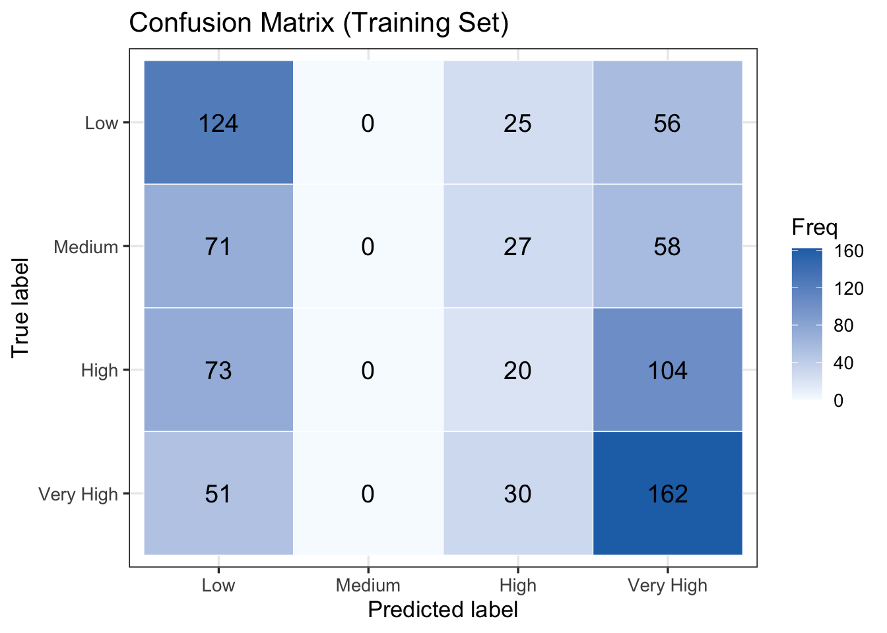
<sklearn.metrics._plot.confusion_matrix.ConfusionMatrixDisplay object at 0x169315050>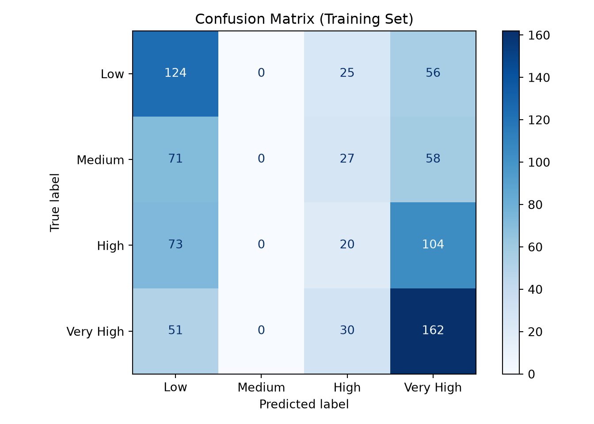
Overall Accuracy: 0.382Macro Recall: 0.343Macro F1: 0.376On the training set, the model achieves an overall accuracy of 38.2%, a macro recall of 34.3%, and a macro F1 of 37.6%. As with any multi-class ordinal problem, these figures should be interpreted relative to the random-chance baseline of 25% for a four-category outcome, so the model outperforms chance, but leaves substantial room for improvement.
The confusion matrix does not show the tidy near-diagonal pattern one might hope for in an ordinal model; instead, the model concentrates its predictions at the two ends of the scale by labelling students Low or Very High, and never assigns the Medium label at all. As the adjacent Medium category is never predicted, misclassified Low students skip it entirely and are sent to High \((25)\) or all the way to the opposite end at Very High (56), while High students are split between Very High \((104)\) and Low \((73)\). The model captures the broad low-versus-high contrast but resolves the interior of the ordinal scale poorly.
The Very High category is the best-predicted class (recall = \(0.67\), F1 = \(0.52\)), with Low close behind (recall = \(0.61\), F1 = \(0.47\)). The two middle categories fare poorly: the model never assigns the Medium label at all (recall = \(0\)), and High is rarely recovered (recall = \(0.10\), F1 = \(0.13\)), as it sits between two better-separated groups and has its observations pulled in both directions. Macro recall \((0.343)\) is lower than accuracy \((0.382)\), reflecting this uneven performance across the four categories, a pattern that persists on the held-out test set and is discussed further in the Results section.
15.8 Inference
After we finish estimating the coefficients, we examine how uncertain they are and whether they differ meaningfully from zero. We obtain a variance estimate for each coefficient from the observed information matrix (the negative of the Hessian at the MLE solution). Taking the square roots of those diagonal variances gives standard errors. Each coefficient divided by its standard error gives an asymptotically normal Wald \(z\)-statistic for testing whether the true effect is zero. Using the same standard errors, we build confidence intervals. To make results more interpretable, we exponentiate a regression coefficient (or its confidence thresholds) to obtain a proportional odds ratio, which describes how the cumulative odds of being at or below any category threshold change for a one unit increase in the regressor, holding other variables fixed.
A key advantage of the proportional odds model compared to the multinomial model is parsimony: as the proportional odds assumption constrains each regressor to a single shared slope across all \(J - 1\) cumulative logits, there is exactly one odds ratio to interpret per regressor rather than one per outcome category. A single estimate summarizes the regressor’s effect on the entire scale of the response variable.
We can determine whether a regressor is statistically associated with the cumulative log-odds through hypothesis testing for the parameters \(\beta_k\). Define the Wald statistic \(z_k\) as:
\[ z_k = \frac{\hat{\beta}_k}{\widehat{\text{se}}\!\left(\hat{\beta}_k\right)} \tag{15.9}\]
and we test the following null \((H_0)\) and alternative \((H_a)\) hypotheses:
\[ \begin{gather*} H_0: \beta_k = 0 \\ H_a: \beta_k \neq 0. \end{gather*} \]
Assuming that the sample size \(n\) is large enough, \(z_k\) follows an approximately Standard Normal distribution under \(H_0\). Note that polr() in R labels this column t value in its summary output, but the inference is based on the Normal approximation.
The corresponding \(p\)-values for each \(\hat{\beta}_k\) can be computed. The smaller the \(p\)-value, the stronger is the evidence against \(H_0\). As in previous regression models, we set a predetermined significance level (usually \(\alpha = 0.05\)): if the \(p\)-value is smaller than \(\alpha\), we claim there is evidence to reject the null hypothesis. Hence, small \(p\)-values indicate that the data support an association between the ordinal response and the \(k\)th regressor, after adjusting for all other regressors in the model.
Given a significance level \(\alpha\), we construct approximate \((1-\alpha)\times 100\%\) confidence intervals for the true \(\beta_k\):
\[ \hat{\beta}_k \pm z_{\alpha/2}\,\widehat{\text{se}}\!\left(\hat{\beta}_k\right), \tag{15.10}\]
where \(z_{\alpha/2}\) is the upper \(\alpha/2\) quantile of the Standard Normal distribution. Exponentiating the endpoints of this interval gives a \((1-\alpha)\times 100\%\) confidence interval for the proportional odds ratio \(e^{\beta_k}\).
We compute the 95% confidence intervals, odds ratios, and \(p\)-values below, and filter the significant coefficients at the 5% significance level.
library(MASS)
library(broom)
# polr() does not return p-values directly. tidy() gives the coefficient
# table (estimates, standard errors, and t-values), from which we compute
# the approximate p-values based on Normal distribution. We keep the slope coefficients only
# (the thresholds are nuisance parameters here) and exponentiate the
# profile-likelihood confidence intervals (conf.int = TRUE) to obtain
# proportional odds ratios.
inference_table <- tidy(ordinal_fit, conf.int = TRUE) |>
filter(term %in% names(coef(ordinal_fit))) |>
mutate(
p_value = 2 * pnorm(abs(statistic), lower.tail = FALSE),
or = exp(estimate),
ci_lower = exp(conf.low),
ci_upper = exp(conf.high)
) |>
dplyr::select(term, estimate, std_error = std.error, statistic,
p_value, or, ci_lower, ci_upper) |>
mutate(across(where(is.numeric), \(x) round(x, 4)))
# Print all coefficients
print(inference_table)
# Filter: significant regressors at the 5% level
cat("\nSignificant regressors (p < 0.05):\n")
print(inference_table[inference_table$p_value < 0.05, ])import numpy as np
import pandas as pd
from scipy import stats
# Extract estimates, SEs, and compute Wald z-statistics and p-values
params = ordinal_result.params
std_errs = ordinal_result.bse
z_stats = params / std_errs
p_values = 2 * stats.norm.sf(np.abs(z_stats))
# Confidence intervals on the log-odds scale
ci = ordinal_result.conf_int()
# In statsmodels OrderedModel the threshold parameters contain "/"
# in their names; keep only the slope (regressor) parameters
slope_mask = ~params.index.str.contains("/")
inference_table = pd.DataFrame({
"term" : params[slope_mask].index,
"estimate" : params[slope_mask].values,
"std_error" : std_errs[slope_mask].values,
"statistic" : np.round(z_stats[slope_mask].values,2),
"p_value" : p_values[slope_mask],
"or" : np.exp(params[slope_mask].values),
"ci_lower" : np.round(np.exp(ci.loc[slope_mask, 0].values),2),
"ci_upper" : np.round(np.exp(ci.loc[slope_mask, 1].values),2),
}).round(4)
print("All slope coefficients:")
print(inference_table.to_string(index=False))
print("\nSignificant regressors (p < 0.05):")
print(inference_table[inference_table["p_value"] < 0.05].to_string(index=False))# A tibble: 6 × 8
term estimate std_error statistic p_value or ci_lower ci_upper
<chr> <dbl> <dbl> <dbl> <dbl> <dbl> <dbl> <dbl>
1 GPA 2.20 0.223 9.89 0 9.07 5.89 14.1
2 GRE_score 0.078 0.0104 7.49 0 1.08 1.06 1.10
3 field_of_studyBu… 0.461 0.226 2.04 0.0411 1.59 1.02 2.47
4 field_of_studySo… 0.0314 0.220 0.142 0.887 1.03 0.670 1.59
5 field_of_studyST… 0.408 0.220 1.86 0.0628 1.50 0.979 2.32
6 field_of_studyHu… 0.209 0.225 0.928 0.353 1.23 0.793 1.92
Significant regressors (p < 0.05):# A tibble: 3 × 8
term estimate std_error statistic p_value or ci_lower ci_upper
<chr> <dbl> <dbl> <dbl> <dbl> <dbl> <dbl> <dbl>
1 GPA 2.20 0.223 9.89 0 9.07 5.89 14.1
2 GRE_score 0.078 0.0104 7.49 0 1.08 1.06 1.10
3 field_of_studyBu… 0.461 0.226 2.04 0.0411 1.59 1.02 2.47All slope coefficients: term estimate std_error statistic p_value or ci_lower ci_upper
GPA 2.2049 0.2229 9.89 0.0000 9.0695 5.86 14.04
GRE_score 0.0780 0.0104 7.50 0.0000 1.0812 1.06 1.10
field_of_study_Business 0.4610 0.2256 2.04 0.0411 1.5856 1.02 2.47
field_of_study_Social Sciences 0.0314 0.2205 0.14 0.8866 1.0319 0.67 1.59
field_of_study_STEM 0.4085 0.2195 1.86 0.0628 1.5045 0.98 2.31
field_of_study_Humanities 0.2089 0.2251 0.93 0.3533 1.2323 0.79 1.92
Significant regressors (p < 0.05): term estimate std_error statistic p_value or ci_lower ci_upper
GPA 2.2049 0.2229 9.89 0.0000 9.0695 5.86 14.04
GRE_score 0.0780 0.0104 7.50 0.0000 1.0812 1.06 1.10
field_of_study_Business 0.4610 0.2256 2.04 0.0411 1.5856 1.02 2.47In the proportional odds model, each coefficient \(\hat{\beta}_k\) describes the association between regressor \(x_{i,k}\) and the cumulative log-odds of being at or below any category threshold \(j\), with the other regressors held fixed. We interpret each significant coefficient through its exponentiated form, the proportional odds ratio \(e^{\hat{\beta}_k}\).
Recall the sign convention used by polr() in R (and OrderedModel in Python):
\[ \text{logit}\!\left(P(Y_i \le j \mid \mathbf{x}_i)\right) = \hat{\alpha}_j - \hat{\boldsymbol{\beta}}^\top \mathbf{x}_i. \]
Because of the sign convention, a positive \(\hat{\beta}_k\) means higher values of \(x_{i,k}\) are associated with lower cumulative probability of being in the lower categories, i.e., a shift of probability mass toward higher ordinal categories. The proportional odds ratio \(e^{\hat{\beta}_k} > 1\) therefore means that the odds of being in a higher category (i.e., \(Y_i > j\)) increases with \(x_{i,k}\).
Before interpreting these results, however, we should verify that the proportional odds assumption actually holds for each regressor. We do this formally in the next subsection using the Brant–Wald test (Section 15.8.1).
15.8.1 Brant–Wald Test for Proportional Odds
The Brant–Wald test provides a formal check of the proportional odds assumption. The idea is to fit \(J - 1 = 3\) separate binary logistic regression models (one per cumulative split) and test whether the slope estimates are “statistically equal” across splits for each regressor. If a regressor’s slope varies significantly across cutpoints, the proportional odds assumption is violated for that regressor.
For each regressor \(x_{i,k}\), let \(\hat{\beta}_{k,j}\) be the estimated slope from the binary logistic regression for cutpoint \(j\), and let \(\hat{\beta}_k^{\text{pool}}\) be the inverse-variance weighted pooled estimate. The Brant statistic for regressor \(k\) is:
\[ B_k = \sum_{j=1}^{J-1} \frac{(\hat{\beta}_{k,j} - \hat{\beta}_k^{\text{pool}})^2}{\widehat{\text{Var}}(\hat{\beta}_{k,j})}, \tag{15.11}\]
which follows a \(\chi^2\) distribution with \(J - 2\) degrees of freedom under \(H_0\) (proportional odds holds for \(x_{i,k}\)). An omnibus version of the test aggregates across all \(k\) regressors, giving a \(\chi^2\) statistic with \((J-2) \times k\) degrees of freedom.
In R, the brant() function from the brant package computes this test directly on a polr object. In Python, we implement it manually by fitting three binary logistic regression models and comparing their slopes.
from scipy.special import expit
from scipy.stats import chi2
from scipy.optimize import minimize
# Design matrix (no intercept) and ordinal response (0-indexed)
X_brant = pd.get_dummies(
train_df[["GPA", "GRE_score", "field_of_study"]], drop_first=True
).astype(float)
y_ord = train_df["inclination_to_apply"].cat.codes.values
cols = X_brant.columns.tolist()
X = X_brant.values
n, K = X.shape
J = int(y_ord.max()) + 1 # number of ordinal categories
def fit_binary_logit(X, y_bin):
"""Binary logit with intercept; returns (beta_full, vcov_full, pi_hat)."""
X_aug = np.column_stack([np.ones(len(y_bin)), X])
def nll(p):
eta = X_aug @ p
pr = np.clip(expit(eta), 1e-15, 1 - 1e-15)
return -np.sum(y_bin * np.log(pr) + (1 - y_bin) * np.log(1 - pr))
def grd(p):
return X_aug.T @ (expit(X_aug @ p) - y_bin)
res = minimize(nll, np.zeros(X_aug.shape[1]), jac=grd, method="BFGS",
options={"maxiter": 10000, "gtol": 1e-10})
beta = res.x
p_hat = expit(X_aug @ beta)
vcov = np.linalg.inv((X_aug * (p_hat * (1 - p_hat))[:, None]).T @ X_aug)
return beta, vcov, p_hat
# Fit J-1 binary logits with z_m = 1[y > m] (R brant()'s convention)
beta_full = np.zeros((J-1, K+1))
vcov_full = []
pi_hat = np.zeros((n, J-1)) # pi_hat[:, m] = P(Y > m | X)
for m in range(J-1):
z_m = (y_ord > m).astype(float)
b, V, p = fit_binary_logit(X, z_m)
beta_full[m, :] = b
vcov_full.append(V)
pi_hat[:, m] = p
# Joint covariance matrix of all slopes across cumulative splits.
# Off-diagonal blocks use Brant (1990)'s formula; diagonals use vcov of each fit.
X_aug = np.column_stack([np.ones(n), X])
varBeta = np.zeros(((J-1)*K, (J-1)*K))
for m in range(J-2):
for l in range(m+1, J-1):
Wml = pi_hat[:, l] - pi_hat[:, m] * pi_hat[:, l]
Wm = pi_hat[:, m] * (1 - pi_hat[:, m])
Wl = pi_hat[:, l] * (1 - pi_hat[:, l])
XtWmX_inv = np.linalg.inv((X_aug * Wm[:, None]).T @ X_aug)
XtWlX_inv = np.linalg.inv((X_aug * Wl[:, None]).T @ X_aug)
XtWmlX = (X_aug * Wml[:, None]).T @ X_aug
cov_block = (XtWmX_inv @ XtWmlX @ XtWlX_inv)[1:, 1:] # drop intercept
varBeta[m*K:(m+1)*K, l*K:(l+1)*K] = cov_block
varBeta[l*K:(l+1)*K, m*K:(m+1)*K] = cov_block.T
for m in range(J-1):
varBeta[m*K:(m+1)*K, m*K:(m+1)*K] = vcov_full[m][1:, 1:]
# Stack the slope estimates across the J-1 cumulative splits
betaStar = beta_full[:, 1:].flatten()
# Contrast matrix D enforcing equal slopes across splits: shape ((J-2)K, (J-1)K)
I_K, Z_K = np.eye(K), np.zeros((K, K))
D = np.vstack([
np.hstack([I_K if j == 0 else (-I_K if j == i+1 else Z_K)
for j in range(J-1)])
for i in range(J-2)
])
# Omnibus Wald statistic
Dbeta = D @ betaStar
omnibus = Dbeta @ np.linalg.inv(D @ varBeta @ D.T) @ Dbeta
omni_df = (J-2) * K
omni_p = chi2.sf(omnibus, omni_df)
# Per-regressor Wald statistics
rows = []
for k, name in enumerate(cols):
s = np.arange(k, K*(J-1), K) # positions of regressor k in betaStar
Ds = D[:, s]
Ds = Ds[~np.all(Ds == 0, axis=1), :] # drop all-zero rows
Vs = varBeta[np.ix_(s, s)]
x2k = Ds @ betaStar[s] @ np.linalg.inv(Ds @ Vs @ Ds.T) @ Ds @ betaStar[s]
rows.append((name, float(x2k), J-2, chi2.sf(x2k, J-2)))
# Print in R brant()-style format
sep = "-" * 60
print(sep)
print(f"{'Test for':30s} {'X2':>8s} {'df':>3s} {'probability':>11s}")
print(sep)
print(f"{'Omnibus':30s} {omnibus:8.2f} {omni_df:>3d} {omni_p:>11.2f}")
for name, x2, df, p in rows:
print(f"{name:30s} {x2:8.2f} {df:>3d} {p:>11.2f}")
print(sep)
print("\nH0: Parallel Regression Assumption holds")--------------------------------------------------------------------
Test for X2 df probability
--------------------------------------------------------------------
Omnibus 24.4 12 0.02
GPA 0.45 2 0.8
GRE_score 16.87 2 0
field_of_studyBusiness 2.76 2 0.25
field_of_studySocial Sciences 1.27 2 0.53
field_of_studySTEM 2.5 2 0.29
field_of_studyHumanities 0.5 2 0.78
--------------------------------------------------------------------
H0: Parallel Regression Assumption holds------------------------------------------------------------Test for X2 df probability------------------------------------------------------------Omnibus 24.37 12 0.02GPA 0.45 2 0.80
GRE_score 16.87 2 0.00
field_of_study_Business 2.76 2 0.25
field_of_study_Social Sciences 1.27 2 0.53
field_of_study_STEM 2.50 2 0.29
field_of_study_Humanities 0.50 2 0.78------------------------------------------------------------
H0: Parallel Regression Assumption holdsAccording to the Brant–Wald test results, GPA satisfies the proportional odds assumption (\(\chi^2(2) = 0.45\), \(p = 0.80\)), as do all four field-of-study dummy variables (all \(p \geq 0.25\)). GRE_score violates the proportional odds assumption (\(\chi^2(2) = 16.87\), \(p < 0.005\)), which confirms the EDA finding that GRE_score mainly distinguishes students in the Very High category rather than tracking the full ordinal gradient. As the violation of proportional odds assumption is confined to a single regressor, a partial proportional odds model, which frees only GRE score’s slope across cutpoints while keeping all other slopes shared, is the appropriate approach.
In many real-world datasets, the proportional odds assumption holds for some regressors but not others. Rather than defaulting to either extreme (the fully proportional odds model or the fully non-proportional odds model), a partial proportional odds model constrains the slopes for “well-behaved” regressors to be shared across cutpoints, while freeing the slopes for regressors that violate the proportional odds assumption. This is the most common approach in practice and is supported by the VGAM package in R via the vglm() function with the cumulative family.
15.8.2 Fitting the Partial Proportional Odds Model
In the partial proportional odds model, GRE score receives a separate slope at each of the \(J - 1 = 3\) cumulative logits, while GPA and field_of_study retain shared slopes. The model is:
\[ \text{logit}\!\left(P(Y_i \le j \mid \mathbf{x}_i)\right) = \alpha_j - \left(\beta_{\texttt{GPA}}\, x_{i,\texttt{GPA}} + \beta_{\texttt{GRE},j}\, x_{i,\texttt{GRE}} + \boldsymbol{\beta}_{\texttt{field}}^\top \mathbf{Z}_{i,\texttt{field}}\right), \quad j = 1, 2, 3, \tag{15.12}\]
where \(\beta_{\texttt{GPA}}\) and each element of \(\boldsymbol{\beta}_{\texttt{field}}\) are shared across all three cumulative splits, but \(\beta_{\texttt{GRE},j}\) varies freely with \(j\). The total parameter count is \((J - 1) + 1 + (J - 1) + (F - 1) = 3 + 1 + 3 + 4 = 11\), compared with 9 in the fully proportional model.
In R, this is straightforward using vglm() from the VGAM package with a named parallel vector. In Python, we implement the likelihood function directly and optimize it using scipy.
library(VGAM)
library(broom.helpers)
# Ensure inclination_to_apply is an ordered factor with correct level order
test_df$inclination_to_apply <- factor(
test_df$inclination_to_apply,
levels = c("Low", "Medium", "High", "Very High"),
ordered = TRUE
)
# Ensure field_of_study is a factor with a fixed reference level (Arts)
test_df$field_of_study <- factor(
test_df$field_of_study,
levels = c("Arts", "Business", "Social Sciences", "STEM", "Humanities")
)
# Partial proportional odds model:
# GPA and field_of_study are constrained (parallel = TRUE)
# GRE_score is freed across cutpoints (parallel = FALSE)
ordinal_fit_ppo <- vglm(
inclination_to_apply ~ GPA + GRE_score + field_of_study,
family = cumulative(link = "logitlink", parallel = FALSE ~ GRE_score),
data = test_df
)
summary(ordinal_fit_ppo)from scipy.optimize import minimize
from scipy.special import expit
from scipy.stats import norm
# Ensure inclination_to_apply is an ordered categorical
ordered_categories = ["Low", "Medium", "High", "Very High"]
test_df["inclination_to_apply"] = pd.Categorical(
test_df["inclination_to_apply"],
categories=ordered_categories,
ordered=True
)
# Ensure field_of_study is a categorical with a fixed reference level (Arts)
field_categories = ["Arts", "Business", "Social Sciences", "STEM", "Humanities"]
test_df["field_of_study"] = pd.Categorical(
test_df["field_of_study"],
categories=field_categories
)
y_ppo = test_df["inclination_to_apply"].cat.codes.values
X_ppo = pd.get_dummies(
test_df[["GPA", "GRE_score", "field_of_study"]], drop_first=True
).astype(float).values
n_ppo = len(y_ppo)
# Standardize GPA and GRE for numerical stability
gpa_m, gpa_s = X_ppo[:, 0].mean(), X_ppo[:, 0].std()
gre_m, gre_s = X_ppo[:, 1].mean(), X_ppo[:, 1].std()
X_sc = X_ppo.copy()
X_sc[:, 0] = (X_ppo[:, 0] - gpa_m) / gpa_s
X_sc[:, 1] = (X_ppo[:, 1] - gre_m) / gre_s
# Reparameterised, standardised NLL using sign convention logit(P(Y<=j)) = a_j - b*X
# params: alpha1, log(a2-a1), log(a3-a2),
# b_gpa_s, b_gre_j1_s, b_gre_j2_s, b_gre_j3_s, b_field[4]
def ppo_neg_ll(p):
a1=p[0]; a2=a1+np.exp(p[1]); a3=a2+np.exp(p[2])
es = p[3]*X_sc[:,0] + X_sc[:,2:]@p[7:11]
e1=es+p[4]*X_sc[:,1]; e2=es+p[5]*X_sc[:,1]; e3=es+p[6]*X_sc[:,1]
F0=expit(a1-e1); F1=expit(a2-e2); F2=expit(a3-e3)
pp=np.column_stack([np.clip(F0,1e-15,1), np.clip(F1-F0,1e-15,1),
np.clip(F2-F1,1e-15,1), np.clip(1-F2,1e-15,1)])
return -np.sum(np.log(pp[np.arange(n_ppo), y_ppo]))
p0 = np.array([0.0, np.log(2.0), np.log(2.0),
3.6*gpa_s, 0.05*gre_s, 0.15*gre_s, 0.28*gre_s,
0.47, 0.22, 0.34, 0.25])
r1 = minimize(ppo_neg_ll, p0, method="Nelder-Mead",
options={"maxiter": 1000000, "xatol": 1e-12, "fatol": 1e-12,
"adaptive": True})
r2 = minimize(ppo_neg_ll, r1.x, method="BFGS",
options={"maxiter": 200000, "gtol": 1e-13})
ppo_params = r2.x
# Convert standardised parameters back to original scale (under the "-b*X" sign convention)
a1_sc, a2_sc, a3_sc = (ppo_params[0],
ppo_params[0]+np.exp(ppo_params[1]),
ppo_params[0]+np.exp(ppo_params[1])+np.exp(ppo_params[2]))
b_gpa_o = ppo_params[3] / gpa_s
b_gre_o = ppo_params[4:7] / gre_s
b_field_o = ppo_params[7:11]
a1_o = a1_sc + b_gpa_o*gpa_m + b_gre_o[0]*gre_m
a2_o = a2_sc + b_gpa_o*gpa_m + b_gre_o[1]*gre_m
a3_o = a3_sc + b_gpa_o*gpa_m + b_gre_o[2]*gre_m
# Refit in original-scale space at the optimum to obtain a clean numerical Hessian.
# Then flip slope signs to match vglm()'s "+b*X" convention used in R's summary().
def ppo_neg_ll_orig_plus(p):
a1, a2, a3 = p[0], p[1], p[2]
b_gpa, b_g1, b_g2, b_g3 = p[3], p[4], p[5], p[6]
b_field = p[7:11]
es = b_gpa*X_ppo[:,0] + X_ppo[:,2:]@b_field
e1=es+b_g1*X_ppo[:,1]; e2=es+b_g2*X_ppo[:,1]; e3=es+b_g3*X_ppo[:,1]
F0=expit(a1+e1); F1=expit(a2+e2); F2=expit(a3+e3) # +b*X convention
pp=np.column_stack([np.clip(F0,1e-15,1), np.clip(F1-F0,1e-15,1),
np.clip(F2-F1,1e-15,1), np.clip(1-F2,1e-15,1)])
return -np.sum(np.log(pp[np.arange(n_ppo), y_ppo]))
# Coefficients in R's "+b*X" sign convention (slopes flipped)
p_R = np.array([a1_o, a2_o, a3_o, -b_gpa_o,
-b_gre_o[0], -b_gre_o[1], -b_gre_o[2],
-b_field_o[0], -b_field_o[1], -b_field_o[2], -b_field_o[3]])
# Numerical Hessian → vcov → standard errors
def num_hess(f, x, eps=1e-5):
K = len(x); H = np.zeros((K, K))
for i in range(K):
for j in range(i, K):
xpp = x.copy(); xpp[i]+=eps; xpp[j]+=eps
xpm = x.copy(); xpm[i]+=eps; xpm[j]-=eps
xmp = x.copy(); xmp[i]-=eps; xmp[j]+=eps
xmm = x.copy(); xmm[i]-=eps; xmm[j]-=eps
H[i,j] = H[j,i] = (f(xpp) - f(xpm) - f(xmp) + f(xmm)) / (4*eps*eps)
return H
H = num_hess(ppo_neg_ll_orig_plus, p_R)
se = np.sqrt(np.diag(np.linalg.inv(H)))
log_lik = -ppo_neg_ll_orig_plus(p_R)
res_dev = -2 * log_lik
res_df = n_ppo*3 - len(p_R)
labels = ["(Intercept):1", "(Intercept):2", "(Intercept):3", "GPA",
"GRE_score:1", "GRE_score:2", "GRE_score:3",
"field_of_studyBusiness", "field_of_studyHumanities",
"field_of_studySocial Sciences", "field_of_studySTEM"]
# Reorder field dummies to R's alphabetical order (Business, Humanities, Social Sciences, STEM)
# pd.get_dummies output is already alphabetical; reorder p_R/se to match label order above
field_order_in_data = ["Business", "Humanities", "STEM", "Social Sciences"]
field_order_R = ["Business", "Humanities", "Social Sciences", "STEM"]
perm = [field_order_in_data.index(f) for f in field_order_R]
p_R_ord = np.concatenate([p_R[:7], p_R[7:11][perm]])
se_ord = np.concatenate([se[:7], se[7:11][perm]])
def stars(p):
if p < 0.001: return "***"
if p < 0.01: return "** "
if p < 0.05: return "* "
if p < 0.1: return ". "
return " "
print("Call:")
print("ordinal_fit_ppo = vglm(inclination_to_apply ~ GPA + GRE_score + field_of_study,")
print(" family = cumulative(link = 'logitlink', parallel = FALSE ~")
print(" GRE_score),")
print(" data = test_df)\n")
print("Coefficients:")
print(f"{'':30s} {'Estimate':>10s} {'Std. Error':>10s} {'z value':>9s} {'Pr(>|z|)':>9s}")
for lbl, est, s in zip(labels, p_R_ord, se_ord):
z = est / s
p_two = 2 * (1 - norm.cdf(abs(z)))
print(f"{lbl:30s} {est:>10.3e} {s:>10.3e} {z:>9.3f} {p_two:>9.0e} {stars(p_two)}")
print("---")
print("Signif. codes: 0 '***' 0.001 '**' 0.01 '*' 0.05 '.' 0.1 ' ' 1\n")
print("Names of systematic components: logitlink(P[Y<=1]), logitlink(P[Y<=2]),")
print(" logitlink(P[Y<=3])\n")
print(f"Residual deviance: {res_dev:.3f} on {res_df} degrees of freedom\n")
print(f"Log-likelihood: {log_lik:.3f} on {res_df} degrees of freedom\n")
print("Number of BFGS iterations:", r2.nit, "\n")
# Exponentiated coefficients (slopes only, two columns)
print("Exponentiated coefficients:")
slope_lbls = labels[3:]
slope_exp = np.exp(p_R_ord[3:])
for i in range(0, len(slope_lbls), 2):
if i + 1 < len(slope_lbls):
print(f"{slope_lbls[i]:>30s} {slope_lbls[i+1]:>30s}")
print(f"{slope_exp[i]:>30.8f} {slope_exp[i+1]:>30.8f}")
else:
print(f"{slope_lbls[i]:>30s}")
print(f"{slope_exp[i]:>30.8f}")
Call:
vglm(formula = inclination_to_apply ~ GPA + GRE_score + field_of_study,
family = cumulative(link = "logitlink", parallel = FALSE ~
GRE_score), data = test_df)
Coefficients:
Estimate Std. Error z value Pr(>|z|)
(Intercept):1 19.71964 4.97760 3.962 7.44e-05 ***
(Intercept):2 27.01834 4.84764 5.574 2.50e-08 ***
(Intercept):3 29.65325 5.19529 5.708 1.15e-08 ***
GPA -2.39869 0.46976 -5.106 3.29e-07 ***
GRE_score:1 -0.08424 0.03118 -2.702 0.00690 **
GRE_score:2 -0.12629 0.02965 -4.260 2.05e-05 ***
GRE_score:3 -0.13534 0.03198 -4.232 2.31e-05 ***
field_of_studyBusiness -1.10984 0.53731 -2.066 0.03887 *
field_of_studySocial Sciences -1.03344 0.52565 -1.966 0.04930 *
field_of_studySTEM -1.31368 0.50212 -2.616 0.00889 **
field_of_studyHumanities -1.08147 0.54313 -1.991 0.04646 *
---
Signif. codes: 0 '***' 0.001 '**' 0.01 '*' 0.05 '.' 0.1 ' ' 1
Names of linear predictors: logitlink(P[Y<=1]), logitlink(P[Y<=2]),
logitlink(P[Y<=3])
Residual deviance: 489.0882 on 586 degrees of freedom
Log-likelihood: -244.5441 on 586 degrees of freedom
Number of Fisher scoring iterations: 7
Exponentiated coefficients:
GPA GRE_score:1
0.09083699 0.91921082
GRE_score:2 GRE_score:3
0.88136073 0.87341866
field_of_studyBusiness field_of_studySocial Sciences
0.32961241 0.35578244
field_of_studySTEM field_of_studyHumanities
0.26882831 0.33909651 Call:ordinal_fit_ppo = vglm(inclination_to_apply ~ GPA + GRE_score + field_of_study, family = cumulative(link = 'logitlink', parallel = FALSE ~ GRE_score), data = test_df)Coefficients: Estimate Std. Error z value Pr(>|z|)(Intercept):1 1.972e+01 5.126e+00 3.847 1e-04 ***
(Intercept):2 2.702e+01 5.186e+00 5.210 2e-07 ***
(Intercept):3 2.965e+01 5.387e+00 5.505 4e-08 ***
GPA -2.399e+00 4.680e-01 -5.126 3e-07 ***
GRE_score:1 -8.424e-02 3.193e-02 -2.639 8e-03 **
GRE_score:2 -1.263e-01 3.158e-02 -3.999 6e-05 ***
GRE_score:3 -1.353e-01 3.328e-02 -4.067 5e-05 ***
field_of_studyBusiness -1.110e+00 5.389e-01 -2.060 4e-02 *
field_of_studyHumanities -1.033e+00 5.314e-01 -1.945 5e-02 .
field_of_studySocial Sciences -1.081e+00 5.449e-01 -1.985 5e-02 *
field_of_studySTEM -1.314e+00 5.038e-01 -2.608 9e-03 ** ---Signif. codes: 0 '***' 0.001 '**' 0.01 '*' 0.05 '.' 0.1 ' ' 1Names of systematic components: logitlink(P[Y<=1]), logitlink(P[Y<=2]), logitlink(P[Y<=3])Residual deviance: 489.088 on 586 degrees of freedomLog-likelihood: -244.544 on 586 degrees of freedomNumber of BFGS iterations: 0 Exponentiated coefficients: GPA GRE_score:1
0.09083602 0.91920998
GRE_score:2 GRE_score:3
0.88135900 0.87341927
field_of_studyBusiness field_of_studyHumanities
0.32961488 0.35578242
field_of_studySocial Sciences field_of_studySTEM
0.33909588 0.2688290515.8.3 Interpreting the Partial Proportional Odds Coefficients
The partial proportional odds model yields the following estimated coefficients. The sign convention is the same as before: a positive \(\hat{\beta}\) corresponds to higher values of that regressor being associated with higher ordinal categories.
GPA: GPA retains a single slope across all three cumulative splits (\(\hat{\beta}_{\texttt{GPA}} = 2.40\), \(z = 5.11\), \(p < 0.001\), OR = 11.01, 95% CI: 4.38, 27.63). It has the following interpretation.
Holding GRE score and field of study constant, a one unit increase in GPA is associated with 11.01 times higher cumulative odds of falling in a higher likelihood-to-apply category, at every cumulative threshold simultaneously.
GRE score: There are three slopes corresponding to GRE score, one per cumulative split, and they are all statistically significant.
| Cutpoint | \(\hat{\beta}_{\texttt{GRE},j}\) | OR (\(e^{\hat\beta}\)) | 95% CI | 5-pt OR (\(e^{5\hat\beta}\)) |
|---|---|---|---|---|
Low\|Medium (\(j=1\)) |
0.084 | 1.088 | (1.023, 1.156) | 1.522 |
Medium\|High (\(j=2\)) |
0.126 | 1.134 | (1.070, 1.202) | 1.878 |
High\|Very High (\(j=3\)) |
0.135 | 1.145 | (1.076, 1.219) | 1.964 |
The increasing pattern across cutpoints is the core finding. At the Low|Medium split, a one-point GRE increase is associated with only 1.088 times higher odds of being above Low. At the High|Very High split, the same one-point increase is associated with 1.145 times higher odds of being in the Very High category. Expressed as 5-point effects, the contrast is clearer: a 5-point increase in GRE score multiplies the odds by about 1.52 at the lowest split, but by about 1.96 at the highest split. This confirms that GRE score is primarily a discriminator for students at the top of the scale rather than a uniform regressor across the full range of GRE scores.
Field of study: On the held-out test set, all four field of study levels reach significance at the 5% confidence threshold relative to the Arts baseline: Business (\(\hat{\beta}_{\texttt{Business}} = 1.11\), \(z = 2.07\), \(p = 0.039\), OR = 3.03), Humanities (\(\hat{\beta}_{\texttt{Humanities}} = 1.08\), \(z = 1.99\), \(p = 0.046\), OR = 2.95), STEM (\(\hat{\beta}_{\texttt{STEM}} = 1.31\), \(z = 2.62\), \(p = 0.009\), OR = 3.72), and Social Sciences (\(\hat{\beta}_{\texttt{Social Sciences}} = 1.03\), \(z = 1.97\), \(p = 0.049\), OR = 2.81). With every odds ratio above \(1\), the pattern is consistent across fields: students outside Arts show higher odds of a stronger inclination to apply to graduate school.
15.9 Results
The partial proportional odds model, in which GPA and field_of_study are constrained to shared coefficients while GRE_score is allowed cutpoint-specific coefficients, is the model selected for this case study, based on the Brant–Wald test results from Section 15.8. Using the sign convention, the fitted model is
\[ \text{logit}\!\left(P(Y_i \le j \mid \mathbf{x}_i)\right) = \hat{\alpha}_j - \left(\hat{\beta}_{\texttt{GPA}}\, x_{i,\texttt{GPA}} + \hat{\beta}_{\texttt{GRE},j}\, x_{i,\texttt{GRE}} + \hat{\boldsymbol{\beta}}_{\texttt{field}}^\top \mathbf{Z}_{i,\texttt{field}}\right) \]
for \(j = 1, 2, 3\) (i.e., the three cumulative splits Low|Medium, Medium|High, and High|Very High). The estimated thresholds and slopes of the selected partial proportional odds model are summarized below. GPA and the field of study levels carry a single shared slope, while GRE score has a separate slope at each cumulative split:
| Parameter | Estimate | Std. Error | \(z\) | \(p\)-value | OR | 95% CI |
|---|---|---|---|---|---|---|
\(\hat{\alpha}_1\) (Low\|Medium) |
19.72 | — | — | — | — | — |
\(\hat{\alpha}_2\) (Medium\|High) |
27.02 | — | — | — | — | — |
\(\hat{\alpha}_3\) (High\|Very High) |
29.65 | — | — | — | — | — |
| \(\hat{\beta}_{\texttt{GPA}}\) (shared) | 2.40 | 0.470 | 5.11 | \(< 0.001\) | 11.01 | (4.38, 27.63) |
\(\hat{\beta}_{\texttt{GRE},1}\) (Low\|Medium) |
0.084 | 0.031 | 2.70 | 0.007 | 1.088 | (1.023, 1.156) |
\(\hat{\beta}_{\texttt{GRE},2}\) (Medium\|High) |
0.126 | 0.030 | 4.26 | \(< 0.001\) | 1.134 | (1.070, 1.202) |
\(\hat{\beta}_{\texttt{GRE},3}\) (High\|Very High) |
0.135 | 0.032 | 4.23 | \(< 0.001\) | 1.145 | (1.076, 1.219) |
| \(\hat{\beta}_{\texttt{Business}}\) (shared) | 1.11 | 0.537 | 2.07 | 0.039 | 3.03 | (1.06, 8.70) |
| \(\hat{\beta}_{\texttt{Humanities}}\) (shared) | 1.08 | 0.543 | 1.99 | 0.046 | 2.95 | (1.02, 8.55) |
| \(\hat{\beta}_{\texttt{STEM}}\) (shared) | 1.31 | 0.502 | 2.62 | 0.009 | 3.72 | (1.39, 9.95) |
| \(\hat{\beta}_{\texttt{Social Sciences}}\) (shared) | 1.03 | 0.526 | 1.97 | 0.049 | 2.81 | (1.00, 7.88) |
After the Brant–Wald test revealed that GRE score’s slope varies significantly across cutpoints, the partial proportional odds model (fitted via vglm() in R) produced cutpoint-specific GRE slopes of \(\hat{\beta}_{\texttt{GRE},1} = 0.084\), \(\hat{\beta}_{\texttt{GRE},2} = 0.126\), and \(\hat{\beta}_{\texttt{GRE},3} = 0.135\) at the three cumulative splits respectively, with all other slope coefficients remaining shared. The interpretation of each significant coefficient is:
- GPA: Holding GRE score and field of study constant, each additional GPA point is associated with 11.01 times higher cumulative odds of being in a higher likelihood-to-apply category, at every cumulative threshold simultaneously. This is by far the strongest regressor in the model.
-
GRE score: The effect of GRE score on the cumulative log-odds grows substantially across cutpoints. A one-point increase in GRE score is associated with an 8.8% increase in the odds of being above
Low(OR = 1.088 at \(j=1\)), rising to a 13.4% increase in the odds of being aboveMedium(OR = 1.134 at \(j=2\)), and a 14.5% increase in the odds of being in theVery Highcategory (OR = 1.145 at \(j=3\)), assuming that GPA and field of study are held constant. This confirms that GRE score primarily distinguishes students at the top of the ordinal scale.
On the test set, all four field-of-study levels are statistically significant after adjusting for GPA and GRE score (all \(p < 0.05\)), with odds ratios between 2.8 and 3.7 relative to the Arts baseline. As this model is fitted on the test set, these field effects are estimated imprecisely and run larger than the corresponding effects in the training-set proportional odds model, where only Business is significant; they should be interpreted with that caveat in mind.
15.9.1 Prediction
Let’s fit the partial proportional odds model on the training set, and predict on the held-out test set. Recall that this is the model selected in Section 15.8, in which GPA and field_of_study carry shared slopes while GRE_score is allowed a separate slope at each cumulative split. The confusion matrix and performance metrics are reported below.
library(VGAM)
library(caret)
library(ggplot2)
# Fit the partial proportional odds model on the training set: GRE_score's slope
# is freed across cutpoints (parallel = FALSE ~ GRE_score) while GPA and the
# field-of-study levels keep a single shared slope.
ppo_fit_train <- vglm(
inclination_to_apply ~ GPA + GRE_score + field_of_study,
family = cumulative(link = "logitlink", parallel = FALSE ~ GRE_score),
data = train_df
)
# Predict on test set. type = "response" returns one column of fitted
# probabilities per response category (in level order); the predicted class is
# the column with the highest probability for each row.
ordered_levels <- c("Low", "Medium", "High", "Very High")
pred_probs <- predict(ppo_fit_train, newdata = test_df, type = "response")
y_pred <- factor(ordered_levels[max.col(pred_probs, ties.method = "first")],
levels = ordered_levels)
# Confusion matrix
conf_matrix <- confusionMatrix(
factor(y_pred, levels = levels(test_df$inclination_to_apply)),
factor(test_df$inclination_to_apply, levels = levels(test_df$inclination_to_apply))
)
# Visualise
cm_df <- as.data.frame(as.table(conf_matrix$table))
colnames(cm_df) <- c("Predicted", "Actual", "Freq")
# Order axes so the main diagonal (correct matches) runs top-left to
# bottom-right: Predicted increases left -> right (Low -> Very High), and
# Actual increases top -> bottom (Low -> Very High). ggplot draws the first
# factor level at the bottom of the y-axis, so we reverse Actual's levels to
# place "Low" at the top.
cm_df$Predicted <- factor(cm_df$Predicted, levels = levels(cm_df$Predicted))
cm_df$Actual <- factor(cm_df$Actual, levels = rev(levels(cm_df$Actual)))
cm_df |>
ggplot(aes(x = Predicted, y = Actual, fill = Freq)) +
geom_tile(color = "white") +
geom_text(aes(label = Freq), color = "black", size = 5) +
scale_fill_gradient(low = "#f7fbff", high = "#2171b5") +
labs(title = "Confusion Matrix (Test Set)",
x = "Predicted label", y = "True label") +
theme_bw(base_size = 13)from sklearn.metrics import confusion_matrix, ConfusionMatrixDisplay
from scipy.optimize import minimize
from scipy.special import expit
import matplotlib.pyplot as plt
ordered_categories = ["Low", "Medium", "High", "Very High"]
field_categories = ["Arts", "Business", "Social Sciences", "STEM", "Humanities"]
# Apply identical category definitions to train and test so the design matrices
# (and y) line up; the fixed field levels keep get_dummies consistent even if a
# category is absent from the test set.
for _df in (train_df, test_df):
_df["inclination_to_apply"] = pd.Categorical(
_df["inclination_to_apply"], categories=ordered_categories, ordered=True
)
_df["field_of_study"] = pd.Categorical(
_df["field_of_study"], categories=field_categories
)
def design(df):
return pd.get_dummies(
df[["GPA", "GRE_score", "field_of_study"]], drop_first=True
).astype(float).values
X_train = design(train_df)
X_test = design(test_df)
y_train = train_df["inclination_to_apply"].cat.codes.values
true_codes = test_df["inclination_to_apply"].cat.codes.values
n_train = len(y_train)
# Standardise GPA and GRE_score for stable optimisation; the partial
# proportional odds likelihood frees GRE_score's slope across the three
# cutpoints (p[4:7]) while GPA (p[3]) and the field dummies (p[7:11]) are shared.
gpa_m, gpa_s = X_train[:, 0].mean(), X_train[:, 0].std()
gre_m, gre_s = X_train[:, 1].mean(), X_train[:, 1].std()
X_sc = X_train.copy()
X_sc[:, 0] = (X_train[:, 0] - gpa_m) / gpa_s
X_sc[:, 1] = (X_train[:, 1] - gre_m) / gre_s
def ppo_neg_ll(p):
a1 = p[0]; a2 = a1 + np.exp(p[1]); a3 = a2 + np.exp(p[2])
es = p[3]*X_sc[:, 0] + X_sc[:, 2:]@p[7:11]
e1 = es + p[4]*X_sc[:, 1]; e2 = es + p[5]*X_sc[:, 1]; e3 = es + p[6]*X_sc[:, 1]
F0 = expit(a1+e1); F1 = expit(a2+e2); F2 = expit(a3+e3)
pp = np.column_stack([np.clip(F0, 1e-15, 1), np.clip(F1-F0, 1e-15, 1),
np.clip(F2-F1, 1e-15, 1), np.clip(1-F2, 1e-15, 1)])
return -np.sum(np.log(pp[np.arange(n_train), y_train]))
p0 = np.array([-1.0, np.log(2.0), np.log(2.0), 0.0, 0.0, 0.0, 0.0, 0.0, 0.0, 0.0, 0.0])
r1 = minimize(ppo_neg_ll, p0, method="Nelder-Mead",
options={"maxiter": 1000000, "xatol": 1e-12, "fatol": 1e-12, "adaptive": True})
r2 = minimize(ppo_neg_ll, r1.x, method="BFGS", options={"maxiter": 200000, "gtol": 1e-12})
p = r2.x
# Convert the fitted parameters back to the original (unscaled) GPA/GRE scale.
a1, a2, a3 = p[0], p[0]+np.exp(p[1]), p[0]+np.exp(p[1])+np.exp(p[2])
b_gpa = p[3] / gpa_s
b_gre = p[4:7] / gre_s
b_field = p[7:11]
A = np.array([a1, a2, a3]) - b_gpa*gpa_m - b_gre*gre_m
def predict_probs(X):
es = b_gpa*X[:, 0] + X[:, 2:]@b_field
F0 = expit(A[0]+es+b_gre[0]*X[:, 1])
F1 = expit(A[1]+es+b_gre[1]*X[:, 1])
F2 = expit(A[2]+es+b_gre[2]*X[:, 1])
return np.column_stack([F0, F1-F0, F2-F1, 1-F2])
# Predict on test set
pred_codes = predict_probs(X_test).argmax(axis=1)
# Confusion matrix
cm = confusion_matrix(true_codes, pred_codes, labels=range(4))
disp = ConfusionMatrixDisplay(confusion_matrix=cm,
display_labels=ordered_categories)
disp.plot(cmap="Blues")
plt.title("Confusion Matrix (Test Set)")
plt.tight_layout()
plt.show()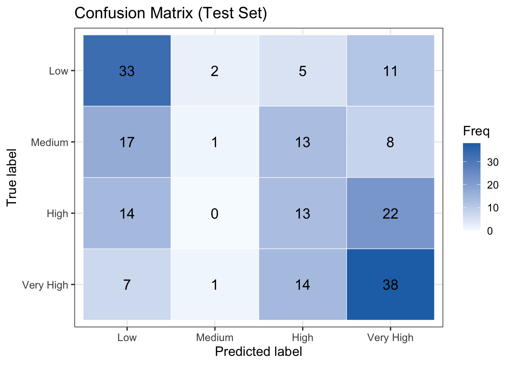
<sklearn.metrics._plot.confusion_matrix.ConfusionMatrixDisplay object at 0x169682dd0>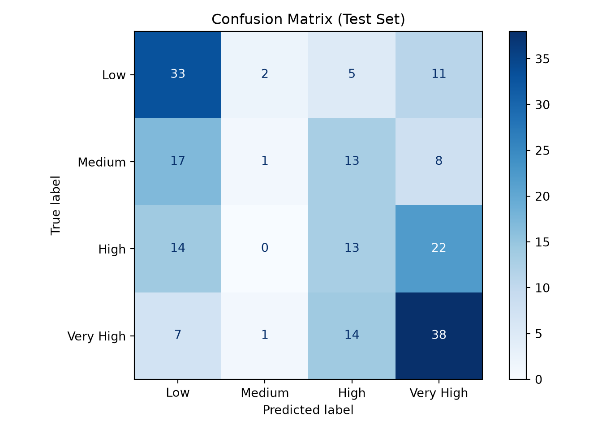
The corresponding performance metrics are computed below.
overall_accuracy <- conf_matrix$overall["Accuracy"]
macro_recall <- mean(conf_matrix$byClass[, "Recall"], na.rm = TRUE)
macro_f1 <- mean(conf_matrix$byClass[, "F1"], na.rm = TRUE)
cat("Overall Accuracy:", round(overall_accuracy, 3), "\n")
cat("Macro Recall:", round(macro_recall, 3), "\n")
cat("Macro F1:", round(macro_f1, 3), "\n")from sklearn.metrics import accuracy_score, recall_score, f1_score
acc = accuracy_score(true_codes, pred_codes)
recall = recall_score(true_codes, pred_codes, average="macro")
# Average F1 only over the classes the model actually predicts, so a
# never-predicted class (undefined precision) is dropped rather than
# counted as 0 — matching caret's byClass F1 with na.rm = TRUE in the R tab.
predicted_labels = np.unique(pred_codes)
f1 = f1_score(true_codes, pred_codes,
labels=predicted_labels, average="macro")
print(f"Overall Accuracy: {acc:.3f}")
print(f"Macro Recall: {recall:.3f}")
print(f"Macro F1: {f1:.3f}")Overall Accuracy: 0.427 Macro Recall: 0.393 Macro F1: 0.353 Overall Accuracy: 0.427Macro Recall: 0.393Macro F1: 0.353On the test set, the partial proportional odds model achieves an overall accuracy of 42.7%, a macro recall of 39.3%, and a macro F1 of 35.3%. Freeing GRE score’s slope across cutpoints recovers the two extreme categories reasonably well but still resolves the interior of the ordinal scale poorly. Of the 51 students with a Low inclination to apply, 33 are classified correctly, while 11 are pushed all the way to Very High; symmetrically, of the 60 students with a Very High inclination, 38 are correct and 7 are misclassified as Low. The Medium category is almost never recovered: among the 39 students who are truly Medium, only 1 is placed correctly, while the remaining 38 are scattered into 17 Low, 13 High, and 8 Very High. The model assigns the Medium label to only 4 students in the entire test set. The model captures the broad high-versus-low contrast and also recovers a portion of the High cases, but the middle of the ordinal scale remains its weakest region in terms of predictive accuracy.
The Low and Very High categories are predicted most reliably, with recalls of \(0.65\) and \(0.63\) (F1 = \(0.54\) and \(0.55\), respectively), consistent with the inference finding that GPA and GRE score most sharply distinguish students at the two ends of the ordinal scale. High is recovered moderately (recall = \(0.27\), F1 = \(0.28\)): of the \(49\) students who are truly High, \(13\) are classified correctly, while \(22\) are pulled up to Very High and \(14\) down to Low. Medium is by far the hardest category — the model assigns that label to only \(4\) students in total and recovers just \(1\) of the \(39\) true cases (recall = \(0.03\), F1 = \(0.05\)). Freeing GRE score’s slope therefore sharpens the High boundary relative to the fully proportional model, but the Medium interior remains essentially unresolved.
15.10 Storytelling
To complete the data science workflow, let’s step back from the coefficients, tests, and confusion matrices and focus on how the results can be interpreted and applied in practice. This final stage, storytelling, is where statistical output is translated into insights that support real-world decision-making.
In this case study, the ordinal logistic regression model helps us understand how a college junior’s GPA, GRE score, and field of study relate to their inclination to apply to graduate school, an outcome we treated as an ordered scale from Low to Very High rather than a simple yes-or-no decision. Below, we distill the key takeaways from the analysis and discuss what they imply for students, academic advisors, and the staff who support graduate school planning.
15.10.1 Key Insights From the Model
GPA is a significant signal of a student’s inclination to apply to graduate school. Of the three factors considered, GPA carries by far the largest influence, and that influence is uniform. A higher GPA is associated with a stronger inclination to apply right across the scale, not just at a single point along it.
GRE score matters most near the top of the scale rather than uniformly for a student’s inclination to apply. Unlike GPA, GRE score does not move every part of the scale equally. Its association with inclination strengthens as students move toward the higher categories of inclination_to_apply, so GRE score mainly separates the most strongly inclined students from the merely interested rather than nudging hesitant students toward applying at all. In practical terms, GRE preparation is likely to matter most for students who are already leaning toward applying and aiming at competitive programs; for students at the lower end of the scale, it is a weaker lever, and other forms of encouragement may do more.
Testing the proportional odds assumption, rather than assuming it, changed the story. The proportional ordinal logistic regression model assumes that the effect of regressors is constant across the entire scale of the response variable. If we had accepted this assumption without checking, the distinctive behaviour of GRE score described above would have stayed hidden. A formal test flagged that GRE score’s effect varies from one cumulative split to the next, which led us to the partial proportional odds model that frees the slope for GRE score, while keeping the slopes “constrained” for other regressors.
As a predictor, the model captures the broad contrast but not the fine gradations. When used to classify students, the model reliably separates the two ends of the scale, clearly inclined versus clearly not, but struggles in between: it recovers only a portion of the High group and rarely identifies Medium students at all, tending to push middle-of-the-scale students outward toward the extremes rather than placing them precisely. Its accuracy sits well above what random guessing would achieve for a four-category outcome, but it still leaves considerable room for improvement. The model is therefore better suited to a coarse screen of who is clearly oriented toward graduate study than to an exact, individual-level placement into one of the four categories.
Using the Results Responsibly
It is important to remember that this analysis is associational, not causal. The model does not show that raising a student’s GPA or GRE score will, on its own, change their inclination to apply. It shows that, in this dataset, higher values tend to occur alongside a stronger inclination once the other measured factors are taken into account.
Nevertheless, the results provide a useful evidence-based starting point for discussion. They help prioritize which factors are most closely linked to a student’s inclination to apply to graduate school, and which factors play a smaller or less certain role. For academic advisors and graduate programs, this kind of insight can guide where limited outreach and mentoring resources are most likely to have impact.